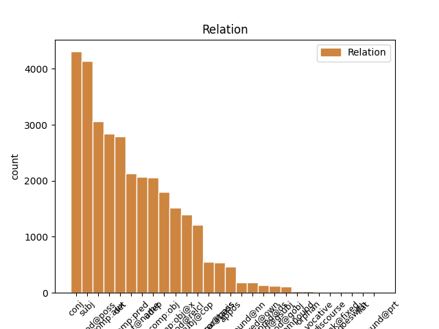
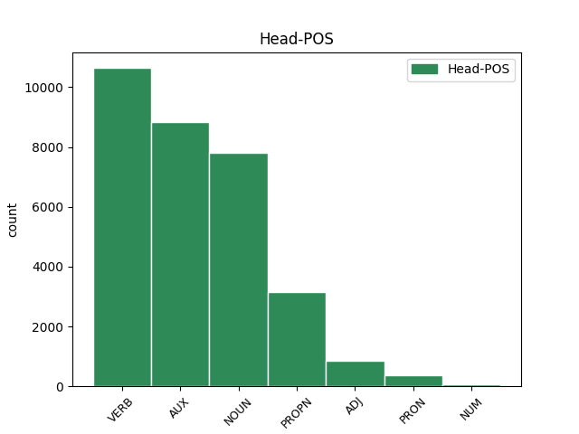
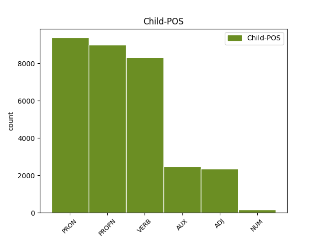

Distribution of features within this leaf



Agreement Rules sorted by frequency.
- When the dependent token is the determiner(det) of the head token, and the dependent token is PRON.
1 Väkiluku _ _ _ _ 0 _ _ _
2 kasvoi _ _ _ _ 0 _ _ _
3 eniten _ _ _ _ 0 _ _ _
4 Uudellamaalla _ _ _ _ 0 _ _ _
5 , _ _ _ _ 0 _ _ _
6 Pirkanmaalla _ _ _ _ 0 _ _ _
7 ja _ _ _ _ 0 _ _ _
8 Pohjois-Pohjanmaalla _ _ _ _ 0 _ _ _
9 sekä _ _ _ _ 0 _ _ _
10 kahdeksassa _ _ _ _ 0 _ _ _
11 muussa muu PRON Pron Case=Ine|Number=Sing|PronType=Ind 12 det _ _
12 maakunnassa maa#kunta NOUN N Case=Ine|Number=Sing 0 _ _ _
13 ja _ _ _ _ 0 _ _ _
14 Ahvenanmaalla _ _ _ _ 0 _ _ _
15 , _ _ _ _ 0 _ _ _
16 joskin _ _ _ _ 0 _ _ _
17 niissä _ _ _ _ 0 _ _ _
18 vähemmän _ _ _ _ 0 _ _ _
19 kuin _ _ _ _ 0 _ _ _
20 kolmessa _ _ _ _ 0 _ _ _
21 edellämainitussa _ _ _ _ 0 _ _ _
22 . _ _ _ _ 0 _ _ _
1 Tekijät _ _ _ _ 0 _ _ _
2 ovat _ _ _ _ 0 _ _ _
3 autonomiseen _ _ _ _ 0 _ _ _
4 vasemmistoon _ _ _ _ 0 _ _ _
5 kuuluvia _ _ _ _ 0 _ _ _
6 henkilöitä _ _ _ _ 0 _ _ _
7 , _ _ _ _ 0 _ _ _
8 jotka joka PRON Pron Case=Nom|Number=Plur|PronType=Rel 10 subj _ _
9 tavallisesti _ _ _ _ 0 _ _ _
10 esiintyvät esiintyä VERB V Mood=Ind|Number=Plur|Person=3|Tense=Pres|VerbForm=Fin|Voice=Act 0 _ _ _
11 nimikkeiden _ _ _ _ 0 _ _ _
12 " _ _ _ _ 0 _ _ _
13 Antifascistisk _ _ _ _ 0 _ _ _
14 aktion _ _ _ _ 0 _ _ _
15 " _ _ _ _ 0 _ _ _
16 tai _ _ _ _ 0 _ _ _
17 " _ _ _ _ 0 _ _ _
18 Revolutionära _ _ _ _ 0 _ _ _
19 fronten _ _ _ _ 0 _ _ _
20 " _ _ _ _ 0 _ _ _
21 alla _ _ _ _ 0 _ _ _
22 . _ _ _ _ 0 _ _ _
1 Säpon _ _ _ _ 0 _ _ _
2 mukaan _ _ _ _ 0 _ _ _
3 väkivaltaisten _ _ _ _ 0 _ _ _
4 hyökkäysten _ _ _ _ 0 _ _ _
5 kohteeksi _ _ _ _ 0 _ _ _
6 ovat olla AUX V Mood=Ind|Number=Plur|Person=3|Tense=Pres|VerbForm=Fin|Voice=Act 0 _ _ _
7 joutuneet joutua VERB V Case=Nom|Degree=Pos|Number=Plur|PartForm=Past|VerbForm=Part|Voice=Act 6 comp:aux _ _
8 ainakin _ _ _ _ 0 _ _ _
9 Ruotsidemokraatit _ _ _ _ 0 _ _ _
10 , _ _ _ _ 0 _ _ _
11 Maltillinen _ _ _ _ 0 _ _ _
12 kokoomus _ _ _ _ 0 _ _ _
13 ja _ _ _ _ 0 _ _ _
14 Kansanpuolue _ _ _ _ 0 _ _ _
15 liberaalit _ _ _ _ 0 _ _ _
16 . _ _ _ _ 0 _ _ _
1 Tekijät _ _ _ _ 0 _ _ _
2 ovat _ _ _ _ 0 _ _ _
3 autonomiseen _ _ _ _ 0 _ _ _
4 vasemmistoon _ _ _ _ 0 _ _ _
5 kuuluvia _ _ _ _ 0 _ _ _
6 henkilöitä _ _ _ _ 0 _ _ _
7 , _ _ _ _ 0 _ _ _
8 jotka _ _ _ _ 0 _ _ _
9 tavallisesti _ _ _ _ 0 _ _ _
10 esiintyvät _ _ _ _ 0 _ _ _
11 nimikkeiden _ _ _ _ 0 _ _ _
12 " _ _ _ _ 0 _ _ _
13 Antifascistisk _ _ _ _ 0 _ _ _
14 aktion _ _ _ _ 0 _ _ _
15 " _ _ _ _ 0 _ _ _
16 tai _ _ _ _ 0 _ _ _
17 " _ _ _ _ 0 _ _ _
18 Revolutionära Revolutionära PROPN N Case=Nom|Number=Sing 0 _ _ _
19 fronten fronten PROPN N Case=Nom|Number=Sing 18 flat@name _ SpaceAfter=No
20 " _ _ _ _ 0 _ _ _
21 alla _ _ _ _ 0 _ _ _
22 . _ _ _ _ 0 _ _ _
1 Suomen Suomi PROPN N Case=Gen|Number=Sing 2 mod@poss _ _
2 väliluvun väli#luku NOUN N Case=Gen|Number=Sing 0 _ _ _
3 kasvu _ _ _ _ 0 _ _ _
4 oli _ _ _ _ 0 _ _ _
5 suurinta _ _ _ _ 0 _ _ _
6 15 _ _ _ _ 0 _ _ _
7 vuoteen _ _ _ _ 0 _ _ _
8 ja _ _ _ _ 0 _ _ _
9 vuoden _ _ _ _ 0 _ _ _
10 lopulla _ _ _ _ 0 _ _ _
11 väkiluku _ _ _ _ 0 _ _ _
12 yltää _ _ _ _ 0 _ _ _
13 5,5 _ _ _ _ 0 _ _ _
14 miljoonaan _ _ _ _ 0 _ _ _
15 , _ _ _ _ 0 _ _ _
16 arvioi _ _ _ _ 0 _ _ _
17 Tilastokeskus _ _ _ _ 0 _ _ _
18 . _ _ _ _ 0 _ _ _
1 Pääsääntöisesti _ _ _ _ 0 _ _ _
2 väkiluvun _ _ _ _ 0 _ _ _
3 kasvusta _ _ _ _ 0 _ _ _
4 tuli _ _ _ _ 0 _ _ _
5 kuitenkin _ _ _ _ 0 _ _ _
6 maahanmuutosta _ _ _ _ 0 _ _ _
7 , _ _ _ _ 0 _ _ _
8 sillä _ _ _ _ 0 _ _ _
9 maahan _ _ _ _ 0 _ _ _
10 muutti muuttaa VERB V Mood=Ind|Number=Sing|Person=3|Tense=Past|VerbForm=Fin|Voice=Act 0 _ _ _
11 vuonna _ _ _ _ 0 _ _ _
12 2007 _ _ _ _ 0 _ _ _
13 25 900 _ _ _ _ 0 _ _ _
14 henkeä _ _ _ _ 0 _ _ _
15 ja _ _ _ _ 0 _ _ _
16 maasta _ _ _ _ 0 _ _ _
17 pois _ _ _ _ 0 _ _ _
18 muutti muuttaa VERB V Mood=Ind|Number=Sing|Person=3|Tense=Past|VerbForm=Fin|Voice=Act 10 conj _ _
19 12 400 _ _ _ _ 0 _ _ _
20 henkeä _ _ _ _ 0 _ _ _
21 . _ _ _ _ 0 _ _ _
1 Säpon _ _ _ _ 0 _ _ _
2 mukaan _ _ _ _ 0 _ _ _
3 väkivaltaisten _ _ _ _ 0 _ _ _
4 hyökkäysten _ _ _ _ 0 _ _ _
5 kohteeksi _ _ _ _ 0 _ _ _
6 ovat olla AUX V Mood=Ind|Number=Plur|Person=3|Tense=Pres|VerbForm=Fin|Voice=Act 0 _ _ _
7 joutuneet _ _ _ _ 0 _ _ _
8 ainakin _ _ _ _ 0 _ _ _
9 Ruotsidemokraatit Ruotsi#demokraatti PROPN N Case=Nom|Number=Plur 6 subj _ SpaceAfter=No
10 , _ _ _ _ 0 _ _ _
11 Maltillinen _ _ _ _ 0 _ _ _
12 kokoomus _ _ _ _ 0 _ _ _
13 ja _ _ _ _ 0 _ _ _
14 Kansanpuolue _ _ _ _ 0 _ _ _
15 liberaalit _ _ _ _ 0 _ _ _
16 . _ _ _ _ 0 _ _ _
1 Suomen _ _ _ _ 0 _ _ _
2 väliluvun _ _ _ _ 0 _ _ _
3 kasvu _ _ _ _ 0 _ _ _
4 oli olla AUX V Mood=Ind|Number=Sing|Person=3|Tense=Past|VerbForm=Fin|Voice=Act 0 _ _ _
5 suurinta suuri ADJ A Case=Par|Degree=Sup|Number=Sing 4 comp:pred _ _
6 15 _ _ _ _ 0 _ _ _
7 vuoteen _ _ _ _ 0 _ _ _
8 ja _ _ _ _ 0 _ _ _
9 vuoden _ _ _ _ 0 _ _ _
10 lopulla _ _ _ _ 0 _ _ _
11 väkiluku _ _ _ _ 0 _ _ _
12 yltää _ _ _ _ 0 _ _ _
13 5,5 _ _ _ _ 0 _ _ _
14 miljoonaan _ _ _ _ 0 _ _ _
15 , _ _ _ _ 0 _ _ _
16 arvioi _ _ _ _ 0 _ _ _
17 Tilastokeskus _ _ _ _ 0 _ _ _
18 . _ _ _ _ 0 _ _ _
1 Rattijuopumustuomiot _ _ _ _ 0 _ _ _
2 kävivät _ _ _ _ 0 _ _ _
3 ilmi _ _ _ _ 0 _ _ _
4 kun _ _ _ _ 0 _ _ _
5 hän _ _ _ _ 0 _ _ _
6 oli _ _ _ _ 0 _ _ _
7 kesällä _ _ _ _ 0 _ _ _
8 palaamassa _ _ _ _ 0 _ _ _
9 Hollannissa _ _ _ _ 0 _ _ _
10 pidetystä _ _ _ _ 0 _ _ _
11 Wikimedia-säätiön _ _ _ _ 0 _ _ _
12 kokouksesta _ _ _ _ 0 _ _ _
13 ja _ _ _ _ 0 _ _ _
14 Floridan _ _ _ _ 0 _ _ _
15 tulli _ _ _ _ 0 _ _ _
16 otti _ _ _ _ 0 _ _ _
17 hänet _ _ _ _ 0 _ _ _
18 kiinni _ _ _ _ 0 _ _ _
19 kuulusteltavaksi _ _ _ _ 0 _ _ _
20 , _ _ _ _ 0 _ _ _
21 koska _ _ _ _ 0 _ _ _
22 hän _ _ _ _ 0 _ _ _
23 oli _ _ _ _ 0 _ _ _
24 jättänyt jättää VERB V Case=Nom|Degree=Pos|Number=Sing|PartForm=Past|VerbForm=Part|Voice=Act 0 _ _ _
25 menemättä mennä VERB V Case=Abe|InfForm=3|Number=Sing|VerbForm=Inf|Voice=Act 24 comp:obj@x _ _
26 sovittuun _ _ _ _ 0 _ _ _
27 tapaamiseen _ _ _ _ 0 _ _ _
28 ehdonalaisvalvojansa _ _ _ _ 0 _ _ _
29 kanssa _ _ _ _ 0 _ _ _
30 . _ _ _ _ 0 _ _ _
1 Rattijuopumustuomiot _ _ _ _ 0 _ _ _
2 kävivät _ _ _ _ 0 _ _ _
3 ilmi _ _ _ _ 0 _ _ _
4 kun _ _ _ _ 0 _ _ _
5 hän _ _ _ _ 0 _ _ _
6 oli _ _ _ _ 0 _ _ _
7 kesällä _ _ _ _ 0 _ _ _
8 palaamassa _ _ _ _ 0 _ _ _
9 Hollannissa _ _ _ _ 0 _ _ _
10 pidetystä _ _ _ _ 0 _ _ _
11 Wikimedia-säätiön _ _ _ _ 0 _ _ _
12 kokouksesta _ _ _ _ 0 _ _ _
13 ja _ _ _ _ 0 _ _ _
14 Floridan _ _ _ _ 0 _ _ _
15 tulli _ _ _ _ 0 _ _ _
16 otti ottaa VERB V Mood=Ind|Number=Sing|Person=3|Tense=Past|VerbForm=Fin|Voice=Act 0 _ _ _
17 hänet hän PRON Pron Case=Acc|Number=Sing|Person=3|PronType=Prs 16 comp:obj _ _
18 kiinni _ _ _ _ 0 _ _ _
19 kuulusteltavaksi _ _ _ _ 0 _ _ _
20 , _ _ _ _ 0 _ _ _
21 koska _ _ _ _ 0 _ _ _
22 hän _ _ _ _ 0 _ _ _
23 oli _ _ _ _ 0 _ _ _
24 jättänyt _ _ _ _ 0 _ _ _
25 menemättä _ _ _ _ 0 _ _ _
26 sovittuun _ _ _ _ 0 _ _ _
27 tapaamiseen _ _ _ _ 0 _ _ _
28 ehdonalaisvalvojansa _ _ _ _ 0 _ _ _
29 kanssa _ _ _ _ 0 _ _ _
30 . _ _ _ _ 0 _ _ _
1 Tekijät _ _ _ _ 0 _ _ _
2 ovat _ _ _ _ 0 _ _ _
3 autonomiseen _ _ _ _ 0 _ _ _
4 vasemmistoon _ _ _ _ 0 _ _ _
5 kuuluvia _ _ _ _ 0 _ _ _
6 henkilöitä _ _ _ _ 0 _ _ _
7 , _ _ _ _ 0 _ _ _
8 jotka _ _ _ _ 0 _ _ _
9 tavallisesti _ _ _ _ 0 _ _ _
10 esiintyvät _ _ _ _ 0 _ _ _
11 nimikkeiden _ _ _ _ 0 _ _ _
12 " _ _ _ _ 0 _ _ _
13 Antifascistisk Antifascistisk PROPN N Case=Nom|Number=Sing 0 _ _ _
14 aktion _ _ _ _ 0 _ _ _
15 " _ _ _ _ 0 _ _ _
16 tai _ _ _ _ 0 _ _ _
17 " _ _ _ _ 0 _ _ _
18 Revolutionära Revolutionära PROPN N Case=Nom|Number=Sing 13 conj _ _
19 fronten _ _ _ _ 0 _ _ _
20 " _ _ _ _ 0 _ _ _
21 alla _ _ _ _ 0 _ _ _
22 . _ _ _ _ 0 _ _ _
1 45-vuotias _ _ _ _ 0 _ _ _
2 Doran _ _ _ _ 0 _ _ _
3 oli _ _ _ _ 0 _ _ _
4 alun _ _ _ _ 0 _ _ _
5 perin _ _ _ _ 0 _ _ _
6 palkattu _ _ _ _ 0 _ _ _
7 säätiöön _ _ _ _ 0 _ _ _
8 kirjanpitäjäksi _ _ _ _ 0 _ _ _
9 , _ _ _ _ 0 _ _ _
10 mutta _ _ _ _ 0 _ _ _
11 tammikuussa _ _ _ _ 0 _ _ _
12 2007 _ _ _ _ 0 _ _ _
13 hänet _ _ _ _ 0 _ _ _
14 ylennettiin _ _ _ _ 0 _ _ _
15 COO:ksi _ _ _ _ 0 _ _ _
16 ( _ _ _ _ 0 _ _ _
17 chief _ _ _ _ 0 _ _ _
18 operating _ _ _ _ 0 _ _ _
19 officer _ _ _ _ 0 _ _ _
20 ) _ _ _ _ 0 _ _ _
21 osan _ _ _ _ 0 _ _ _
22 entisen _ _ _ _ 0 _ _ _
23 toimitusjohtaja _ _ _ _ 0 _ _ _
24 ( _ _ _ _ 0 _ _ _
25 Executive _ _ _ _ 0 _ _ _
26 Officer _ _ _ _ 0 _ _ _
27 ) _ _ _ _ 0 _ _ _
28 Brad _ _ _ _ 0 _ _ _
29 Patricin _ _ _ _ 0 _ _ _
30 tehtävistä _ _ _ _ 0 _ _ _
31 siirryttyä siirtyä VERB V Case=Par|Degree=Pos|Number=Sing|PartForm=Past|VerbForm=Part|Voice=Pass 0 _ _ _
32 hänelle hän PRON Pron Case=All|Number=Sing|Person=3|PronType=Prs 31 udep _ SpaceAfter=No
33 . _ _ _ _ 0 _ _ _
1 Kuolleisuus _ _ _ _ 0 _ _ _
2 kuitenkin _ _ _ _ 0 _ _ _
3 lisääntyi lisääntyä VERB V Mood=Ind|Number=Sing|Person=3|Tense=Past|VerbForm=Fin|Voice=Act 0 _ _ _
4 vuoteen _ _ _ _ 0 _ _ _
5 2006 _ _ _ _ 0 _ _ _
6 verrattuna _ _ _ _ 0 _ _ _
7 1000 _ _ _ _ 0 _ _ _
8 henkilöllä _ _ _ _ 0 _ _ _
9 ja _ _ _ _ 0 _ _ _
10 kuolleiden _ _ _ _ 0 _ _ _
11 määrä _ _ _ _ 0 _ _ _
12 oli olla AUX V Mood=Ind|Number=Sing|Person=3|Tense=Past|VerbForm=Fin|Voice=Act 3 conj _ _
13 siis _ _ _ _ 0 _ _ _
14 kaikkiaan _ _ _ _ 0 _ _ _
15 49 100 _ _ _ _ 0 _ _ _
16 henkilöä _ _ _ _ 0 _ _ _
17 . _ _ _ _ 0 _ _ _
1 Poika _ _ _ _ 0 _ _ _
2 oli _ _ _ _ 0 _ _ _
3 pelannut _ _ _ _ 0 _ _ _
4 viime _ _ _ _ 0 _ _ _
5 lauantaina _ _ _ _ 0 _ _ _
6 ystävineen _ _ _ _ 0 _ _ _
7 läpi _ _ _ _ 0 _ _ _
8 yön _ _ _ _ 0 _ _ _
9 uutta _ _ _ _ 0 _ _ _
10 Wrath _ _ _ _ 0 _ _ _
11 of _ _ _ _ 0 _ _ _
12 the _ _ _ _ 0 _ _ _
13 Lich _ _ _ _ 0 _ _ _
14 King _ _ _ _ 0 _ _ _
15 -lisäosaa _ _ _ _ 0 _ _ _
16 , _ _ _ _ 0 _ _ _
17 joka joka PRON Pron Case=Nom|Number=Sing|PronType=Rel 18 subj@cop _ _
18 on olla AUX V Mood=Ind|Number=Sing|Person=3|Tense=Pres|VerbForm=Fin|Voice=Act 0 _ _ _
19 Svenska _ _ _ _ 0 _ _ _
20 Dagbladetin _ _ _ _ 0 _ _ _
21 mukaan _ _ _ _ 0 _ _ _
22 ollut _ _ _ _ 0 _ _ _
23 huolenaihe _ _ _ _ 0 _ _ _
24 muidenkin _ _ _ _ 0 _ _ _
25 pelaajien _ _ _ _ 0 _ _ _
26 vanhemmille _ _ _ _ 0 _ _ _
27 . _ _ _ _ 0 _ _ _
1 Väkiluku _ _ _ _ 0 _ _ _
2 kasvoi kasvaa VERB V Mood=Ind|Number=Sing|Person=3|Tense=Past|VerbForm=Fin|Voice=Act 0 _ _ _
3 eniten _ _ _ _ 0 _ _ _
4 Uudellamaalla Uusimaa PROPN N Case=Ade|Number=Sing 2 udep _ SpaceAfter=No
5 , _ _ _ _ 0 _ _ _
6 Pirkanmaalla _ _ _ _ 0 _ _ _
7 ja _ _ _ _ 0 _ _ _
8 Pohjois-Pohjanmaalla _ _ _ _ 0 _ _ _
9 sekä _ _ _ _ 0 _ _ _
10 kahdeksassa _ _ _ _ 0 _ _ _
11 muussa _ _ _ _ 0 _ _ _
12 maakunnassa _ _ _ _ 0 _ _ _
13 ja _ _ _ _ 0 _ _ _
14 Ahvenanmaalla _ _ _ _ 0 _ _ _
15 , _ _ _ _ 0 _ _ _
16 joskin _ _ _ _ 0 _ _ _
17 niissä _ _ _ _ 0 _ _ _
18 vähemmän _ _ _ _ 0 _ _ _
19 kuin _ _ _ _ 0 _ _ _
20 kolmessa _ _ _ _ 0 _ _ _
21 edellämainitussa _ _ _ _ 0 _ _ _
22 . _ _ _ _ 0 _ _ _
1 Tekijät _ _ _ _ 0 _ _ _
2 ovat _ _ _ _ 0 _ _ _
3 autonomiseen _ _ _ _ 0 _ _ _
4 vasemmistoon _ _ _ _ 0 _ _ _
5 kuuluvia _ _ _ _ 0 _ _ _
6 henkilöitä henkilö NOUN N Case=Par|Number=Plur 0 _ _ _
7 , _ _ _ _ 0 _ _ _
8 jotka _ _ _ _ 0 _ _ _
9 tavallisesti _ _ _ _ 0 _ _ _
10 esiintyvät esiintyä VERB V Mood=Ind|Number=Plur|Person=3|Tense=Pres|VerbForm=Fin|Voice=Act 6 mod@relcl _ _
11 nimikkeiden _ _ _ _ 0 _ _ _
12 " _ _ _ _ 0 _ _ _
13 Antifascistisk _ _ _ _ 0 _ _ _
14 aktion _ _ _ _ 0 _ _ _
15 " _ _ _ _ 0 _ _ _
16 tai _ _ _ _ 0 _ _ _
17 " _ _ _ _ 0 _ _ _
18 Revolutionära _ _ _ _ 0 _ _ _
19 fronten _ _ _ _ 0 _ _ _
20 " _ _ _ _ 0 _ _ _
21 alla _ _ _ _ 0 _ _ _
22 . _ _ _ _ 0 _ _ _
1 45-vuotias _ _ _ _ 0 _ _ _
2 Doran _ _ _ _ 0 _ _ _
3 oli olla AUX V Mood=Ind|Number=Sing|Person=3|Tense=Past|VerbForm=Fin|Voice=Act 0 _ _ _
4 alun _ _ _ _ 0 _ _ _
5 perin _ _ _ _ 0 _ _ _
6 palkattu palkata VERB V Case=Nom|Degree=Pos|Number=Sing|PartForm=Past|VerbForm=Part|Voice=Pass 3 comp:aux@pass _ _
7 säätiöön _ _ _ _ 0 _ _ _
8 kirjanpitäjäksi _ _ _ _ 0 _ _ _
9 , _ _ _ _ 0 _ _ _
10 mutta _ _ _ _ 0 _ _ _
11 tammikuussa _ _ _ _ 0 _ _ _
12 2007 _ _ _ _ 0 _ _ _
13 hänet _ _ _ _ 0 _ _ _
14 ylennettiin _ _ _ _ 0 _ _ _
15 COO:ksi _ _ _ _ 0 _ _ _
16 ( _ _ _ _ 0 _ _ _
17 chief _ _ _ _ 0 _ _ _
18 operating _ _ _ _ 0 _ _ _
19 officer _ _ _ _ 0 _ _ _
20 ) _ _ _ _ 0 _ _ _
21 osan _ _ _ _ 0 _ _ _
22 entisen _ _ _ _ 0 _ _ _
23 toimitusjohtaja _ _ _ _ 0 _ _ _
24 ( _ _ _ _ 0 _ _ _
25 Executive _ _ _ _ 0 _ _ _
26 Officer _ _ _ _ 0 _ _ _
27 ) _ _ _ _ 0 _ _ _
28 Brad _ _ _ _ 0 _ _ _
29 Patricin _ _ _ _ 0 _ _ _
30 tehtävistä _ _ _ _ 0 _ _ _
31 siirryttyä _ _ _ _ 0 _ _ _
32 hänelle _ _ _ _ 0 _ _ _
33 . _ _ _ _ 0 _ _ _
1 Poika _ _ _ _ 0 _ _ _
2 oli _ _ _ _ 0 _ _ _
3 pelannut _ _ _ _ 0 _ _ _
4 viime _ _ _ _ 0 _ _ _
5 lauantaina _ _ _ _ 0 _ _ _
6 ystävineen _ _ _ _ 0 _ _ _
7 läpi _ _ _ _ 0 _ _ _
8 yön _ _ _ _ 0 _ _ _
9 uutta _ _ _ _ 0 _ _ _
10 Wrath _ _ _ _ 0 _ _ _
11 of _ _ _ _ 0 _ _ _
12 the _ _ _ _ 0 _ _ _
13 Lich _ _ _ _ 0 _ _ _
14 King _ _ _ _ 0 _ _ _
15 -lisäosaa lisä#osa NOUN N Case=Par|Number=Sing 0 _ _ _
16 , _ _ _ _ 0 _ _ _
17 joka _ _ _ _ 0 _ _ _
18 on olla AUX V Mood=Ind|Number=Sing|Person=3|Tense=Pres|VerbForm=Fin|Voice=Act 15 mod@relcl _ _
19 Svenska _ _ _ _ 0 _ _ _
20 Dagbladetin _ _ _ _ 0 _ _ _
21 mukaan _ _ _ _ 0 _ _ _
22 ollut _ _ _ _ 0 _ _ _
23 huolenaihe _ _ _ _ 0 _ _ _
24 muidenkin _ _ _ _ 0 _ _ _
25 pelaajien _ _ _ _ 0 _ _ _
26 vanhemmille _ _ _ _ 0 _ _ _
27 . _ _ _ _ 0 _ _ _
1 Väkiluku _ _ _ _ 0 _ _ _
2 on _ _ _ _ 0 _ _ _
3 kasvanut _ _ _ _ 0 _ _ _
4 vuoden _ _ _ _ 0 _ _ _
5 aikana _ _ _ _ 0 _ _ _
6 23 000 _ _ _ _ 0 _ _ _
7 hengellä _ _ _ _ 0 _ _ _
8 ja _ _ _ _ 0 _ _ _
9 näin _ _ _ _ 0 _ _ _
10 kasvu _ _ _ _ 0 _ _ _
11 on olla AUX V Mood=Ind|Number=Sing|Person=3|Tense=Pres|VerbForm=Fin|Voice=Act 0 _ _ _
12 ollut olla AUX V Case=Nom|Degree=Pos|Number=Sing|PartForm=Past|VerbForm=Part|Voice=Act 11 comp:aux _ _
13 0,4 _ _ _ _ 0 _ _ _
14 prosenttia _ _ _ _ 0 _ _ _
15 . _ _ _ _ 0 _ _ _
1 Finnjet _ _ _ _ 0 _ _ _
2 valmistui _ _ _ _ 0 _ _ _
3 Helsingissä _ _ _ _ 0 _ _ _
4 vuonna _ _ _ _ 0 _ _ _
5 1977 _ _ _ _ 0 _ _ _
6 ollen _ _ _ _ 0 _ _ _
7 aikanaan _ _ _ _ 0 _ _ _
8 maailman _ _ _ _ 0 _ _ _
9 nopein nopea ADJ A Case=Nom|Degree=Sup|Number=Sing 0 _ _ _
10 ja _ _ _ _ 0 _ _ _
11 suurin suuri ADJ A Case=Nom|Degree=Sup|Number=Sing 9 conj _ _
12 autolautta _ _ _ _ 0 _ _ _
13 . _ _ _ _ 0 _ _ _
1 Seminaarilippujen _ _ _ _ 0 _ _ _
2 ostaminen _ _ _ _ 0 _ _ _
3 on _ _ _ _ 0 _ _ _
4 puolestaan _ _ _ _ 0 _ _ _
5 hänen hän PRON Pron Case=Gen|Number=Sing|Person=3|PronType=Prs 6 mod@poss _ _
6 mielestään mieli NOUN N Case=Ela|Number=Sing|Person[psor]=3 0 _ _ _
7 hyväksyttävää _ _ _ _ 0 _ _ _
8 koska _ _ _ _ 0 _ _ _
9 lippujen _ _ _ _ 0 _ _ _
10 myyjät _ _ _ _ 0 _ _ _
11 jakavat _ _ _ _ 0 _ _ _
12 liiton _ _ _ _ 0 _ _ _
13 päihdetavoitteet _ _ _ _ 0 _ _ _
14 . _ _ _ _ 0 _ _ _
1 Kolmas _ _ _ _ 0 _ _ _
2 kaapeli kaapeli NOUN N Case=Nom|Number=Sing 0 _ _ _
3 , _ _ _ _ 0 _ _ _
4 FLAG FLAG PROPN N Case=Nom|Number=Sing 2 appos _ _
5 Falcon _ _ _ _ 0 _ _ _
6 , _ _ _ _ 0 _ _ _
7 katkesi _ _ _ _ 0 _ _ _
8 perjantaina _ _ _ _ 0 _ _ _
9 56 _ _ _ _ 0 _ _ _
10 kilometrin _ _ _ _ 0 _ _ _
11 päästä _ _ _ _ 0 _ _ _
12 Dubaista _ _ _ _ 0 _ _ _
13 ja _ _ _ _ 0 _ _ _
14 FLAG:in _ _ _ _ 0 _ _ _
15 virallinen _ _ _ _ 0 _ _ _
16 selityksen _ _ _ _ 0 _ _ _
17 mukaan _ _ _ _ 0 _ _ _
18 sen _ _ _ _ 0 _ _ _
19 rikkoi _ _ _ _ 0 _ _ _
20 todennäköisesti _ _ _ _ 0 _ _ _
21 laivan _ _ _ _ 0 _ _ _
22 ankkuri _ _ _ _ 0 _ _ _
23 . _ _ _ _ 0 _ _ _
1 Suomen _ _ _ _ 0 _ _ _
2 väliluvun _ _ _ _ 0 _ _ _
3 kasvu _ _ _ _ 0 _ _ _
4 oli olla AUX V Mood=Ind|Number=Sing|Person=3|Tense=Past|VerbForm=Fin|Voice=Act 0 _ _ _
5 suurinta _ _ _ _ 0 _ _ _
6 15 _ _ _ _ 0 _ _ _
7 vuoteen _ _ _ _ 0 _ _ _
8 ja _ _ _ _ 0 _ _ _
9 vuoden _ _ _ _ 0 _ _ _
10 lopulla _ _ _ _ 0 _ _ _
11 väkiluku _ _ _ _ 0 _ _ _
12 yltää _ _ _ _ 0 _ _ _
13 5,5 _ _ _ _ 0 _ _ _
14 miljoonaan _ _ _ _ 0 _ _ _
15 , _ _ _ _ 0 _ _ _
16 arvioi arvioida VERB V Mood=Ind|Number=Sing|Person=3|Tense=Pres|VerbForm=Fin|Voice=Act 4 parataxis _ _
17 Tilastokeskus _ _ _ _ 0 _ _ _
18 . _ _ _ _ 0 _ _ _
1 Kuitenkin _ _ _ _ 0 _ _ _
2 vielä _ _ _ _ 0 _ _ _
3 joulukuussa _ _ _ _ 0 _ _ _
4 2007 _ _ _ _ 0 _ _ _
5 tehdyn _ _ _ _ 0 _ _ _
6 kyselyn _ _ _ _ 0 _ _ _
7 perusteella _ _ _ _ 0 _ _ _
8 Clinton Clinton PROPN N Case=Nom|Number=Sing 9 subj@cop _ _
9 olisi olla AUX V Mood=Cnd|Number=Sing|Person=3|VerbForm=Fin|Voice=Act 0 _ _ _
10 ollut _ _ _ _ 0 _ _ _
11 selvässä _ _ _ _ 0 _ _ _
12 johdossa _ _ _ _ 0 _ _ _
13 New _ _ _ _ 0 _ _ _
14 Hampshiren _ _ _ _ 0 _ _ _
15 osavaltiossa _ _ _ _ 0 _ _ _
16 . _ _ _ _ 0 _ _ _
1 Kahdessa _ _ _ _ 0 _ _ _
2 keskiviikkona _ _ _ _ 0 _ _ _
3 Egyptin _ _ _ _ 0 _ _ _
4 rannikolla _ _ _ _ 0 _ _ _
5 sattuneessa _ _ _ _ 0 _ _ _
6 rikossa _ _ _ _ 0 _ _ _
7 syy _ _ _ _ 0 _ _ _
8 on _ _ _ _ 0 _ _ _
9 tuntematon _ _ _ _ 0 _ _ _
10 , _ _ _ _ 0 _ _ _
11 mutta _ _ _ _ 0 _ _ _
12 tutkimuksissa _ _ _ _ 0 _ _ _
13 on _ _ _ _ 0 _ _ _
14 saatu saada VERB V Case=Nom|Degree=Pos|Number=Sing|PartForm=Past|VerbForm=Part|Voice=Pass 0 _ _ _
15 poissuljettua pois#sulkea VERB V Case=Par|Degree=Pos|Number=Sing|PartForm=Past|VerbForm=Part|Voice=Pass 14 comp:pred _ _
16 se _ _ _ _ 0 _ _ _
17 , _ _ _ _ 0 _ _ _
18 että _ _ _ _ 0 _ _ _
19 laivojen _ _ _ _ 0 _ _ _
20 ankkurit _ _ _ _ 0 _ _ _
21 olisivat _ _ _ _ 0 _ _ _
22 rikkoneet _ _ _ _ 0 _ _ _
23 kaapelit _ _ _ _ 0 _ _ _
24 . _ _ _ _ 0 _ _ _
1 45-vuotias _ _ _ _ 0 _ _ _
2 Doran Doran PROPN N Case=Nom|Number=Sing 6 comp:obj _ _
3 oli _ _ _ _ 0 _ _ _
4 alun _ _ _ _ 0 _ _ _
5 perin _ _ _ _ 0 _ _ _
6 palkattu palkata VERB V Case=Nom|Degree=Pos|Number=Sing|PartForm=Past|VerbForm=Part|Voice=Pass 0 _ _ _
7 säätiöön _ _ _ _ 0 _ _ _
8 kirjanpitäjäksi _ _ _ _ 0 _ _ _
9 , _ _ _ _ 0 _ _ _
10 mutta _ _ _ _ 0 _ _ _
11 tammikuussa _ _ _ _ 0 _ _ _
12 2007 _ _ _ _ 0 _ _ _
13 hänet _ _ _ _ 0 _ _ _
14 ylennettiin _ _ _ _ 0 _ _ _
15 COO:ksi _ _ _ _ 0 _ _ _
16 ( _ _ _ _ 0 _ _ _
17 chief _ _ _ _ 0 _ _ _
18 operating _ _ _ _ 0 _ _ _
19 officer _ _ _ _ 0 _ _ _
20 ) _ _ _ _ 0 _ _ _
21 osan _ _ _ _ 0 _ _ _
22 entisen _ _ _ _ 0 _ _ _
23 toimitusjohtaja _ _ _ _ 0 _ _ _
24 ( _ _ _ _ 0 _ _ _
25 Executive _ _ _ _ 0 _ _ _
26 Officer _ _ _ _ 0 _ _ _
27 ) _ _ _ _ 0 _ _ _
28 Brad _ _ _ _ 0 _ _ _
29 Patricin _ _ _ _ 0 _ _ _
30 tehtävistä _ _ _ _ 0 _ _ _
31 siirryttyä _ _ _ _ 0 _ _ _
32 hänelle _ _ _ _ 0 _ _ _
33 . _ _ _ _ 0 _ _ _
1 Tähän _ _ _ _ 0 _ _ _
2 on _ _ _ _ 0 _ _ _
3 olemassa _ _ _ _ 0 _ _ _
4 oma _ _ _ _ 0 _ _ _
5 hyvä _ _ _ _ 0 _ _ _
6 syynsäkin _ _ _ _ 0 _ _ _
7 kuten _ _ _ _ 0 _ _ _
8 Aamulehden _ _ _ _ 0 _ _ _
9 toimittaja _ _ _ _ 0 _ _ _
10 Riitta-Liisa _ _ _ _ 0 _ _ _
11 Pirttikoski _ _ _ _ 0 _ _ _
12 toteaa _ _ _ _ 0 _ _ _
13 : _ _ _ _ 0 _ _ _
14 " _ _ _ _ 0 _ _ _
15 Ja _ _ _ _ 0 _ _ _
16 miksi _ _ _ _ 0 _ _ _
17 , _ _ _ _ 0 _ _ _
18 sillä _ _ _ _ 0 _ _ _
19 paras _ _ _ _ 0 _ _ _
20 on olla AUX V Mood=Ind|Number=Sing|Person=3|Tense=Pres|VerbForm=Fin|Voice=Act 0 _ _ _
21 sama sama PRON Pron Case=Nom|Number=Sing|PronType=Ind 20 comp:pred _ SpaceAfter=No
22 : _ _ _ _ 0 _ _ _
23 omintakeinen _ _ _ _ 0 _ _ _
24 itsellisyys _ _ _ _ 0 _ _ _
25 , _ _ _ _ 0 _ _ _
26 jonka _ _ _ _ 0 _ _ _
27 avulla _ _ _ _ 0 _ _ _
28 seistään _ _ _ _ 0 _ _ _
29 pystyssä _ _ _ _ 0 _ _ _
30 , _ _ _ _ 0 _ _ _
31 toi _ _ _ _ 0 _ _ _
32 tuleva _ _ _ _ 0 _ _ _
33 mitä _ _ _ _ 0 _ _ _
34 tahansa _ _ _ _ 0 _ _ _
35 " _ _ _ _ 0 _ _ _
1 Sekä _ _ _ _ 0 _ _ _
2 Roswallin _ _ _ _ 0 _ _ _
3 , _ _ _ _ 0 _ _ _
4 että _ _ _ _ 0 _ _ _
5 The _ _ _ _ 0 _ _ _
6 Pirate _ _ _ _ 0 _ _ _
7 Bayn _ _ _ _ 0 _ _ _
8 edustajien _ _ _ _ 0 _ _ _
9 näkemys _ _ _ _ 0 _ _ _
10 on _ _ _ _ 0 _ _ _
11 , _ _ _ _ 0 _ _ _
12 että _ _ _ _ 0 _ _ _
13 riippumatta _ _ _ _ 0 _ _ _
14 siitä se PRON Pron Case=Ela|Number=Sing|PronType=Dem 0 _ _ _
15 mikä _ _ _ _ 0 _ _ _
16 on olla AUX V Mood=Ind|Number=Sing|Person=3|Tense=Pres|VerbForm=Fin|Voice=Act 14 comp:obj _ _
17 oikeusprosessin _ _ _ _ 0 _ _ _
18 lopputulos _ _ _ _ 0 _ _ _
19 niin _ _ _ _ 0 _ _ _
20 se _ _ _ _ 0 _ _ _
21 ei _ _ _ _ 0 _ _ _
22 sulje _ _ _ _ 0 _ _ _
23 sivustoa _ _ _ _ 0 _ _ _
24 , _ _ _ _ 0 _ _ _
25 koska _ _ _ _ 0 _ _ _
26 se _ _ _ _ 0 _ _ _
27 sivusto _ _ _ _ 0 _ _ _
28 on _ _ _ _ 0 _ _ _
29 hajautettu _ _ _ _ 0 _ _ _
30 useisiin _ _ _ _ 0 _ _ _
31 eri _ _ _ _ 0 _ _ _
32 maihin _ _ _ _ 0 _ _ _
33 . _ _ _ _ 0 _ _ _
1 DirectConnectin _ _ _ _ 0 _ _ _
2 käyttö _ _ _ _ 0 _ _ _
3 on olla AUX V Mood=Ind|Number=Sing|Person=3|Tense=Pres|VerbForm=Fin|Voice=Act 0 _ _ _
4 vähentynyt _ _ _ _ 0 _ _ _
5 melko _ _ _ _ 0 _ _ _
6 marginaaliseksi marginaalinen ADJ A Case=Tra|Degree=Pos|Derivation=Inen|Number=Sing 3 udep _ _
7 lukuun _ _ _ _ 0 _ _ _
8 ottamatta _ _ _ _ 0 _ _ _
9 Itä-Eurooppaa _ _ _ _ 0 _ _ _
10 . _ _ _ _ 0 _ _ _
1 Poika _ _ _ _ 0 _ _ _
2 oli _ _ _ _ 0 _ _ _
3 pelannut _ _ _ _ 0 _ _ _
4 viime _ _ _ _ 0 _ _ _
5 lauantaina _ _ _ _ 0 _ _ _
6 ystävineen _ _ _ _ 0 _ _ _
7 läpi _ _ _ _ 0 _ _ _
8 yön _ _ _ _ 0 _ _ _
9 uutta _ _ _ _ 0 _ _ _
10 Wrath Wrath PROPN N Case=Nom|Number=Sing 15 compound@nn _ _
11 of _ _ _ _ 0 _ _ _
12 the _ _ _ _ 0 _ _ _
13 Lich _ _ _ _ 0 _ _ _
14 King _ _ _ _ 0 _ _ _
15 -lisäosaa lisä#osa NOUN N Case=Par|Number=Sing 0 _ _ _
16 , _ _ _ _ 0 _ _ _
17 joka _ _ _ _ 0 _ _ _
18 on _ _ _ _ 0 _ _ _
19 Svenska _ _ _ _ 0 _ _ _
20 Dagbladetin _ _ _ _ 0 _ _ _
21 mukaan _ _ _ _ 0 _ _ _
22 ollut _ _ _ _ 0 _ _ _
23 huolenaihe _ _ _ _ 0 _ _ _
24 muidenkin _ _ _ _ 0 _ _ _
25 pelaajien _ _ _ _ 0 _ _ _
26 vanhemmille _ _ _ _ 0 _ _ _
27 . _ _ _ _ 0 _ _ _
1 Lappeenrannan _ _ _ _ 0 _ _ _
2 kaupunki _ _ _ _ 0 _ _ _
3 palkitsee palkita VERB V Mood=Ind|Number=Sing|Person=3|Tense=Pres|VerbForm=Fin|Voice=Act 0 _ _ _
4 kolme _ _ _ _ 0 _ _ _
5 parasta _ _ _ _ 0 _ _ _
6 sekä _ _ _ _ 0 _ _ _
7 miesten- _ _ _ _ 0 _ _ _
8 että _ _ _ _ 0 _ _ _
9 naisten _ _ _ _ 0 _ _ _
10 sarjassa _ _ _ _ 0 _ _ _
11 sijoittunutta sijoittua VERB V Case=Par|Degree=Pos|Number=Sing|PartForm=Past|VerbForm=Part|Voice=Act 3 comp:obj _ SpaceAfter=No
12 . _ _ _ _ 0 _ _ _
1 * _ _ _ _ 0 _ _ _
2 16. _ _ _ _ 0 _ _ _
3 huhtikuuta _ _ _ _ 0 _ _ _
4 2009 _ _ _ _ 0 _ _ _
5 : _ _ _ _ 0 _ _ _
6 Kiviniemi Kiviniemi PROPN N Case=Nom|Number=Sing 0 _ _ _
7 : _ _ _ _ 0 _ _ _
8 Kuntien _ _ _ _ 0 _ _ _
9 yhdistämisrahan _ _ _ _ 0 _ _ _
10 voi voida AUX V Mood=Ind|Number=Sing|Person=3|Tense=Pres|VerbForm=Fin|Voice=Act 6 parataxis _ _
11 antaa _ _ _ _ 0 _ _ _
12 puolueille _ _ _ _ 0 _ _ _
1 CERN _ _ _ _ 0 _ _ _
2 on _ _ _ _ 0 _ _ _
3 Rösslerin _ _ _ _ 0 _ _ _
4 kertoman _ _ _ _ 0 _ _ _
5 mukaan _ _ _ _ 0 _ _ _
6 myöntänyt myöntää VERB V Case=Nom|Degree=Pos|Number=Sing|PartForm=Past|VerbForm=Part|Voice=Act 0 _ _ _
7 LHC:n _ _ _ _ 0 _ _ _
8 käynnistämisessä _ _ _ _ 0 _ _ _
9 syntyvän syntyä VERB V Case=Gen|Degree=Pos|Number=Sing|PartForm=Pres|VerbForm=Part|Voice=Act 6 comp:pred@ds _ _
10 mustia _ _ _ _ 0 _ _ _
11 aukkoja _ _ _ _ 0 _ _ _
12 . _ _ _ _ 0 _ _ _
1 Large _ _ _ _ 0 _ _ _
2 Hadron _ _ _ _ 0 _ _ _
3 Colliderin _ _ _ _ 0 _ _ _
4 on olla AUX V Mood=Ind|Number=Sing|Person=3|Tense=Pres|VerbForm=Fin|Voice=Act 0 _ _ _
5 tarkoituksena _ _ _ _ 0 _ _ _
6 on _ _ _ _ 0 _ _ _
7 selvittää selvittää VERB V InfForm=1|Number=Sing|VerbForm=Inf|Voice=Act 4 subj@cop _ _
8 muun _ _ _ _ 0 _ _ _
9 muassa _ _ _ _ 0 _ _ _
10 materian _ _ _ _ 0 _ _ _
11 alkuperä _ _ _ _ 0 _ _ _
12 ja _ _ _ _ 0 _ _ _
13 kuinka _ _ _ _ 0 _ _ _
14 maailmankaikkeus _ _ _ _ 0 _ _ _
15 syntyi _ _ _ _ 0 _ _ _
16 . _ _ _ _ 0 _ _ _
1 — _ _ _ _ 0 _ _ _
2 Tänään _ _ _ _ 0 _ _ _
3 minulla minä PRON Pron Case=Ade|Number=Sing|Person=1|PronType=Prs 5 comp:pred@own _ _
4 on _ _ _ _ 0 _ _ _
5 ollut olla AUX V Case=Nom|Degree=Pos|Number=Sing|PartForm=Past|VerbForm=Part|Voice=Act 0 _ _ _
6 itseluottamusta _ _ _ _ 0 _ _ _
7 ja _ _ _ _ 0 _ _ _
8 olen _ _ _ _ 0 _ _ _
9 nauttinut _ _ _ _ 0 _ _ _
10 ajamisesta _ _ _ _ 0 _ _ _
11 , _ _ _ _ 0 _ _ _
12 kertoi _ _ _ _ 0 _ _ _
13 Latvala _ _ _ _ 0 _ _ _
14 päivän _ _ _ _ 0 _ _ _
15 lopulla _ _ _ _ 0 _ _ _
16 . _ _ _ _ 0 _ _ _
1 Elämäntapaliiton _ _ _ _ 0 _ _ _
2 puheenjohtaja _ _ _ _ 0 _ _ _
3 on olla AUX V Mood=Ind|Number=Sing|Person=3|Tense=Pres|VerbForm=Fin|Voice=Act 0 _ _ _
4 SAK:n _ _ _ _ 0 _ _ _
5 kehittämisjohtaja _ _ _ _ 0 _ _ _
6 Eija Eija PROPN N Case=Nom|Number=Sing 3 comp:pred _ _
7 Hietanen _ _ _ _ 0 _ _ _
8 . _ _ _ _ 0 _ _ _
1 Bensiinimoottoreina _ _ _ _ 0 _ _ _
2 tullaan _ _ _ _ 0 _ _ _
3 käyttämään käyttää VERB V Case=Ill|InfForm=3|Number=Sing|VerbForm=Inf|Voice=Act 0 _ _ _
4 1.0-litraista _ _ _ _ 0 _ _ _
5 48 _ _ _ _ 0 _ _ _
6 kW:n _ _ _ _ 0 _ _ _
7 tehoista _ _ _ _ 0 _ _ _
8 kolmisylinteristä kolmi#sylinterinen ADJ A Case=Par|Degree=Pos|Derivation=Inen|Number=Sing 3 comp:obj _ _
9 ja _ _ _ _ 0 _ _ _
10 1.2-litraista _ _ _ _ 0 _ _ _
11 64 _ _ _ _ 0 _ _ _
12 kW:n _ _ _ _ 0 _ _ _
13 tehoista _ _ _ _ 0 _ _ _
14 nelisylinteristä _ _ _ _ 0 _ _ _
15 . _ _ _ _ 0 _ _ _
1 Kolmas _ _ _ _ 0 _ _ _
2 kaapeli _ _ _ _ 0 _ _ _
3 , _ _ _ _ 0 _ _ _
4 FLAG _ _ _ _ 0 _ _ _
5 Falcon _ _ _ _ 0 _ _ _
6 , _ _ _ _ 0 _ _ _
7 katkesi _ _ _ _ 0 _ _ _
8 perjantaina _ _ _ _ 0 _ _ _
9 56 _ _ _ _ 0 _ _ _
10 kilometrin _ _ _ _ 0 _ _ _
11 päästä _ _ _ _ 0 _ _ _
12 Dubaista _ _ _ _ 0 _ _ _
13 ja _ _ _ _ 0 _ _ _
14 FLAG:in FLAG PROPN N Case=Gen|Number=Sing 16 mod@gsubj _ _
15 virallinen _ _ _ _ 0 _ _ _
16 selityksen selitys NOUN N Case=Gen|Number=Sing 0 _ _ _
17 mukaan _ _ _ _ 0 _ _ _
18 sen _ _ _ _ 0 _ _ _
19 rikkoi _ _ _ _ 0 _ _ _
20 todennäköisesti _ _ _ _ 0 _ _ _
21 laivan _ _ _ _ 0 _ _ _
22 ankkuri _ _ _ _ 0 _ _ _
23 . _ _ _ _ 0 _ _ _
1 Verosta _ _ _ _ 0 _ _ _
2 vastattiin _ _ _ _ 0 _ _ _
3 pitäjittäin _ _ _ _ 0 _ _ _
4 kaikki kaikki PRON Pron Case=Nom|Number=Sing|PronType=Ind 0 _ _ _
5 yhden _ _ _ _ 0 _ _ _
6 ja _ _ _ _ 0 _ _ _
7 yksi yksi PRON Pron Case=Nom|Number=Sing|PronType=Ind 4 conj _ _
8 kaikkien _ _ _ _ 0 _ _ _
9 puolesta _ _ _ _ 0 _ _ _
10 periaatteella _ _ _ _ 0 _ _ _
11 . _ _ _ _ 0 _ _ _
1 [ _ _ _ _ 0 _ _ _
2 Silloin _ _ _ _ 0 _ _ _
3 ] _ _ _ _ 0 _ _ _
4 sinä _ _ _ _ 0 _ _ _
5 sanoit _ _ _ _ 0 _ _ _
6 , _ _ _ _ 0 _ _ _
7 että _ _ _ _ 0 _ _ _
8 siitä _ _ _ _ 0 _ _ _
9 tulisi tulla VERB V Mood=Cnd|Number=Sing|Person=3|VerbForm=Fin|Voice=Act 0 _ _ _
10 nopea nopea ADJ A Case=Nom|Degree=Pos|Number=Sing 9 subj _ _
11 ja _ _ _ _ 0 _ _ _
12 helppo _ _ _ _ 0 _ _ _
13 , _ _ _ _ 0 _ _ _
14 Obama _ _ _ _ 0 _ _ _
15 sanoi _ _ _ _ 0 _ _ _
16 alleviivatessaan _ _ _ _ 0 _ _ _
17 McCainin _ _ _ _ 0 _ _ _
18 virhearviota _ _ _ _ 0 _ _ _
19 . _ _ _ _ 0 _ _ _
1 * _ _ _ _ 0 _ _ _
2 16. _ _ _ _ 0 _ _ _
3 elokuuta _ _ _ _ 0 _ _ _
4 2009 _ _ _ _ 0 _ _ _
5 : _ _ _ _ 0 _ _ _
6 Taleban _ _ _ _ 0 _ _ _
7 uhkailee uhkailla VERB V Mood=Ind|Number=Sing|Person=3|Tense=Pres|VerbForm=Fin|Voice=Act 0 _ _ _
8 naisia _ _ _ _ 0 _ _ _
9 olemaan olla AUX V Case=Ill|InfForm=3|Number=Sing|VerbForm=Inf|Voice=Act 7 comp:obj@x _ _
10 äänestämättä _ _ _ _ 0 _ _ _
1 Elämäntapaliitto _ _ _ _ 0 _ _ _
2 kärähti _ _ _ _ 0 _ _ _
3 RAY-avustusten _ _ _ _ 0 _ _ _
4 käyttämisestä _ _ _ _ 0 _ _ _
5 SDP:n SDP PROPN N Abbr=Yes|Case=Gen|Number=Sing 6 mod@gobj _ _
6 tukemiseen tukeminen NOUN N Case=Ill|Derivation=Minen|Number=Sing 0 _ _ _
1 Ehdolliseen _ _ _ _ 0 _ _ _
2 tuomioon _ _ _ _ 0 _ _ _
3 liittyy _ _ _ _ 0 _ _ _
4 koeaika _ _ _ _ 0 _ _ _
5 , _ _ _ _ 0 _ _ _
6 jonka _ _ _ _ 0 _ _ _
7 kuluessa _ _ _ _ 0 _ _ _
8 ilmenevistä _ _ _ _ 0 _ _ _
9 uusista _ _ _ _ 0 _ _ _
10 rikoksista _ _ _ _ 0 _ _ _
11 tuomitaan _ _ _ _ 0 _ _ _
12 ankarampi _ _ _ _ 0 _ _ _
13 rangaistus _ _ _ _ 0 _ _ _
14 sen _ _ _ _ 0 _ _ _
15 johdosta _ _ _ _ 0 _ _ _
16 , _ _ _ _ 0 _ _ _
17 että _ _ _ _ 0 _ _ _
18 ei ei AUX V Number=Sing|Person=3|Polarity=Neg|VerbForm=Fin|Voice=Act 0 _ _ _
19 ehdollisesti _ _ _ _ 0 _ _ _
20 tuomittu tuomita VERB V Case=Nom|Degree=Pos|Number=Sing|PartForm=Past|VerbForm=Part|Voice=Pass 18 subj _ _
21 ole _ _ _ _ 0 _ _ _
22 parantanut _ _ _ _ 0 _ _ _
23 tapojaan _ _ _ _ 0 _ _ _
24 . _ _ _ _ 0 _ _ _
1 Teos _ _ _ _ 0 _ _ _
2 on _ _ _ _ 0 _ _ _
3 ilmestynyt _ _ _ _ 0 _ _ _
4 myös _ _ _ _ 0 _ _ _
5 Venäjällä _ _ _ _ 0 _ _ _
6 , _ _ _ _ 0 _ _ _
7 ja _ _ _ _ 0 _ _ _
8 sen se PRON Pron Case=Gen|Number=Sing|PronType=Dem 9 mod@gobj _ _
9 julkaisu julkaisu NOUN N Case=Nom|Derivation=U|Number=Sing 0 _ _ _
10 azerin _ _ _ _ 0 _ _ _
11 kielelle _ _ _ _ 0 _ _ _
12 on _ _ _ _ 0 _ _ _
13 suunnitteilla _ _ _ _ 0 _ _ _
14 . _ _ _ _ 0 _ _ _
1 * _ _ _ _ 0 _ _ _
2 12. _ _ _ _ 0 _ _ _
3 elokuuta _ _ _ _ 0 _ _ _
4 2009 _ _ _ _ 0 _ _ _
5 : _ _ _ _ 0 _ _ _
6 JHL _ _ _ _ 0 _ _ _
7 tukenut _ _ _ _ 0 _ _ _
8 SDP:tä _ _ _ _ 0 _ _ _
9 lähes _ _ _ _ 0 _ _ _
10 puolella puoli NUM Num Case=Ade|Number=Sing 11 compound _ _
11 miljoonalla miljoona NUM Num Case=Ade|Number=Sing|NumType=Card 0 _ _ _
12 eurolla _ _ _ _ 0 _ _ _
13 kolmen _ _ _ _ 0 _ _ _
14 vuoden _ _ _ _ 0 _ _ _
15 aikana _ _ _ _ 0 _ _ _
1 Large _ _ _ _ 0 _ _ _
2 Hadron _ _ _ _ 0 _ _ _
3 Colliderin _ _ _ _ 0 _ _ _
4 on olla AUX V Mood=Ind|Number=Sing|Person=3|Tense=Pres|VerbForm=Fin|Voice=Act 0 _ _ _
5 tarkoituksena _ _ _ _ 0 _ _ _
6 on olla AUX V Mood=Ind|Number=Sing|Person=3|Tense=Pres|VerbForm=Fin|Voice=Act 4 comp:pred _ _
7 selvittää _ _ _ _ 0 _ _ _
8 muun _ _ _ _ 0 _ _ _
9 muassa _ _ _ _ 0 _ _ _
10 materian _ _ _ _ 0 _ _ _
11 alkuperä _ _ _ _ 0 _ _ _
12 ja _ _ _ _ 0 _ _ _
13 kuinka _ _ _ _ 0 _ _ _
14 maailmankaikkeus _ _ _ _ 0 _ _ _
15 syntyi _ _ _ _ 0 _ _ _
16 . _ _ _ _ 0 _ _ _
1 Tapahtuma _ _ _ _ 0 _ _ _
2 on _ _ _ _ 0 _ _ _
3 kerännyt _ _ _ _ 0 _ _ _
4 vuosi _ _ _ _ 0 _ _ _
5 vuodelta _ _ _ _ 0 _ _ _
6 enemmän _ _ _ _ 0 _ _ _
7 kävijöitä _ _ _ _ 0 _ _ _
8 – _ _ _ _ 0 _ _ _
9 vuonna _ _ _ _ 0 _ _ _
10 2005 _ _ _ _ 0 _ _ _
11 järjestetyssä _ _ _ _ 0 _ _ _
12 ensimmäisessä _ _ _ _ 0 _ _ _
13 tapahtumassa _ _ _ _ 0 _ _ _
14 kävijöitä _ _ _ _ 0 _ _ _
15 oli olla AUX V Mood=Ind|Number=Sing|Person=3|Tense=Past|VerbForm=Fin|Voice=Act 0 _ _ _
16 noin _ _ _ _ 0 _ _ _
17 tuhat tuhat NUM Num Case=Nom|Number=Sing|NumType=Card 15 comp:pred _ SpaceAfter=No
18 , _ _ _ _ 0 _ _ _
19 vuonna _ _ _ _ 0 _ _ _
20 2006 _ _ _ _ 0 _ _ _
21 noin _ _ _ _ 0 _ _ _
22 1 800 _ _ _ _ 0 _ _ _
23 ja _ _ _ _ 0 _ _ _
24 vuonna _ _ _ _ 0 _ _ _
25 2008 _ _ _ _ 0 _ _ _
26 noin _ _ _ _ 0 _ _ _
27 2 800 _ _ _ _ 0 _ _ _
28 . _ _ _ _ 0 _ _ _
1 Hän _ _ _ _ 0 _ _ _
2 kärsi _ _ _ _ 0 _ _ _
3 entuudestaan _ _ _ _ 0 _ _ _
4 verenkiertohäiriöistä _ _ _ _ 0 _ _ _
5 , _ _ _ _ 0 _ _ _
6 joiden _ _ _ _ 0 _ _ _
7 takia _ _ _ _ 0 _ _ _
8 hänen hän PRON Pron Case=Gen|Number=Sing|Person=3|PronType=Prs 9 mod@gsubj _ _
9 pelaaminen pelaaminen NOUN N Case=Nom|Derivation=Minen|Number=Sing|Person[psor]=3|Style=Coll 0 _ _ _
10 ottelussa _ _ _ _ 0 _ _ _
11 oli _ _ _ _ 0 _ _ _
12 epävarmaa _ _ _ _ 0 _ _ _
13 . _ _ _ _ 0 _ _ _
1 Se _ _ _ _ 0 _ _ _
2 on olla AUX V Mood=Ind|Number=Sing|Person=3|Tense=Pres|VerbForm=Fin|Voice=Act 0 _ _ _
3 myös _ _ _ _ 0 _ _ _
4 luultavasti _ _ _ _ 0 _ _ _
5 Ruotsin _ _ _ _ 0 _ _ _
6 kansainvälisesti _ _ _ _ 0 _ _ _
7 suosituin _ _ _ _ 0 _ _ _
8 sivusto _ _ _ _ 0 _ _ _
9 ja _ _ _ _ 0 _ _ _
10 yksi yksi NUM Num Case=Nom|Number=Sing|NumType=Card 2 conj _ _
11 tämän _ _ _ _ 0 _ _ _
12 hetkisen _ _ _ _ 0 _ _ _
13 tekijänoikeuskeskustelun _ _ _ _ 0 _ _ _
14 keskipisteistä _ _ _ _ 0 _ _ _
15 . _ _ _ _ 0 _ _ _
1 McCain _ _ _ _ 0 _ _ _
2 puolestaan _ _ _ _ 0 _ _ _
3 sanoi _ _ _ _ 0 _ _ _
4 Obaman _ _ _ _ 0 _ _ _
5 talousmielipiteitä _ _ _ _ 0 _ _ _
6 senaatissa _ _ _ _ 0 _ _ _
7 vasemmistolaisiksi vasemmistolainen ADJ A Case=Tra|Degree=Pos|Derivation=Lainen|Number=Plur 0 _ _ _
8 , _ _ _ _ 0 _ _ _
9 äärimmäisen _ _ _ _ 0 _ _ _
10 liberalistisiksi liberalistinen ADJ A Case=Tra|Degree=Pos|Derivation=Inen|Number=Plur 7 appos _ SpaceAfter=No
11 . _ _ _ _ 0 _ _ _
1 Tapahtumien _ _ _ _ 0 _ _ _
2 kulusta _ _ _ _ 0 _ _ _
3 Mikkosella Mikkonen PROPN N Case=Ade|Number=Sing 7 comp:pred@own _ _
4 ja _ _ _ _ 0 _ _ _
5 Puolustusvoimien _ _ _ _ 0 _ _ _
6 edustajilla _ _ _ _ 0 _ _ _
7 on olla AUX V Mood=Ind|Number=Sing|Person=3|Tense=Pres|VerbForm=Fin|Voice=Act 0 _ _ _
8 nyt _ _ _ _ 0 _ _ _
9 jälkikäteen _ _ _ _ 0 _ _ _
10 toisistaan _ _ _ _ 0 _ _ _
11 eroava _ _ _ _ 0 _ _ _
12 käsitys _ _ _ _ 0 _ _ _
13 . _ _ _ _ 0 _ _ _
1 Suomen _ _ _ _ 0 _ _ _
2 väliluvun _ _ _ _ 0 _ _ _
3 kasvu _ _ _ _ 0 _ _ _
4 oli _ _ _ _ 0 _ _ _
5 suurinta _ _ _ _ 0 _ _ _
6 15 _ _ _ _ 0 _ _ _
7 vuoteen _ _ _ _ 0 _ _ _
8 ja _ _ _ _ 0 _ _ _
9 vuoden _ _ _ _ 0 _ _ _
10 lopulla _ _ _ _ 0 _ _ _
11 väkiluku _ _ _ _ 0 _ _ _
12 yltää yltää VERB V Mood=Ind|Number=Sing|Person=3|Tense=Pres|VerbForm=Fin|Voice=Act 0 _ _ _
13 5,5 _ _ _ _ 0 _ _ _
14 miljoonaan miljoona NUM Num Case=Ill|Number=Sing|NumType=Card 12 udep _ SpaceAfter=No
15 , _ _ _ _ 0 _ _ _
16 arvioi _ _ _ _ 0 _ _ _
17 Tilastokeskus _ _ _ _ 0 _ _ _
18 . _ _ _ _ 0 _ _ _
1 Tähän _ _ _ _ 0 _ _ _
2 on _ _ _ _ 0 _ _ _
3 olemassa _ _ _ _ 0 _ _ _
4 oma _ _ _ _ 0 _ _ _
5 hyvä _ _ _ _ 0 _ _ _
6 syynsäkin _ _ _ _ 0 _ _ _
7 kuten _ _ _ _ 0 _ _ _
8 Aamulehden _ _ _ _ 0 _ _ _
9 toimittaja _ _ _ _ 0 _ _ _
10 Riitta-Liisa _ _ _ _ 0 _ _ _
11 Pirttikoski _ _ _ _ 0 _ _ _
12 toteaa _ _ _ _ 0 _ _ _
13 : _ _ _ _ 0 _ _ _
14 " _ _ _ _ 0 _ _ _
15 Ja _ _ _ _ 0 _ _ _
16 miksi _ _ _ _ 0 _ _ _
17 , _ _ _ _ 0 _ _ _
18 sillä _ _ _ _ 0 _ _ _
19 paras hyvä ADJ A Case=Nom|Degree=Sup|Number=Sing 20 subj@cop _ _
20 on olla AUX V Mood=Ind|Number=Sing|Person=3|Tense=Pres|VerbForm=Fin|Voice=Act 0 _ _ _
21 sama _ _ _ _ 0 _ _ _
22 : _ _ _ _ 0 _ _ _
23 omintakeinen _ _ _ _ 0 _ _ _
24 itsellisyys _ _ _ _ 0 _ _ _
25 , _ _ _ _ 0 _ _ _
26 jonka _ _ _ _ 0 _ _ _
27 avulla _ _ _ _ 0 _ _ _
28 seistään _ _ _ _ 0 _ _ _
29 pystyssä _ _ _ _ 0 _ _ _
30 , _ _ _ _ 0 _ _ _
31 toi _ _ _ _ 0 _ _ _
32 tuleva _ _ _ _ 0 _ _ _
33 mitä _ _ _ _ 0 _ _ _
34 tahansa _ _ _ _ 0 _ _ _
35 " _ _ _ _ 0 _ _ _
1 Ei ei AUX V Number=Sing|Person=3|Polarity=Neg|VerbForm=Fin|Voice=Act 0 _ _ _
2 ainoastaan _ _ _ _ 0 _ _ _
3 eurooppalainen eurooppalainen ADJ A Case=Nom|Degree=Pos|Derivation=Lainen|Number=Sing 1 comp:aux _ SpaceAfter=No
4 , _ _ _ _ 0 _ _ _
5 vaan _ _ _ _ 0 _ _ _
6 myös _ _ _ _ 0 _ _ _
7 Yhdysvaltain _ _ _ _ 0 _ _ _
8 kriisi _ _ _ _ 0 _ _ _
9 , _ _ _ _ 0 _ _ _
10 pääministeri _ _ _ _ 0 _ _ _
11 Jyrki _ _ _ _ 0 _ _ _
12 Katainen _ _ _ _ 0 _ _ _
13 kertoi _ _ _ _ 0 _ _ _
14 Huomenta _ _ _ _ 0 _ _ _
15 Suomessa _ _ _ _ 0 _ _ _
16 . _ _ _ _ 0 _ _ _
1 Kiinassa _ _ _ _ 0 _ _ _
2 ihmiset _ _ _ _ 0 _ _ _
3 eivät _ _ _ _ 0 _ _ _
4 pysty _ _ _ _ 0 _ _ _
5 vaikuttamaan _ _ _ _ 0 _ _ _
6 omaan _ _ _ _ 0 _ _ _
7 ympäristöönsä ympäristö NOUN N Case=Ill|Number=Sing|Person[psor]=3 0 _ _ _
8 , _ _ _ _ 0 _ _ _
9 kuten _ _ _ _ 0 _ _ _
10 siihen se PRON Pron Case=Ill|Number=Sing|PronType=Dem 7 appos _ SpaceAfter=No
11 , _ _ _ _ 0 _ _ _
12 mitä _ _ _ _ 0 _ _ _
13 rakentamisen _ _ _ _ 0 _ _ _
14 tieltä _ _ _ _ 0 _ _ _
15 puretaan _ _ _ _ 0 _ _ _
16 ja _ _ _ _ 0 _ _ _
17 mitä _ _ _ _ 0 _ _ _
18 ei _ _ _ _ 0 _ _ _
19 . _ _ _ _ 0 _ _ _
1 Hoskinsin _ _ _ _ 0 _ _ _
2 tunnetuimpiin _ _ _ _ 0 _ _ _
3 näyttelijäsuorituksiin _ _ _ _ 0 _ _ _
4 lukeutuvat _ _ _ _ 0 _ _ _
5 etsivä _ _ _ _ 0 _ _ _
6 Eddie _ _ _ _ 0 _ _ _
7 Valiant _ _ _ _ 0 _ _ _
8 elokuvasta _ _ _ _ 0 _ _ _
9 Kuka _ _ _ _ 0 _ _ _
10 viritti virittää VERB V Mood=Ind|Number=Sing|Person=3|Tense=Past|VerbForm=Fin|Voice=Act 0 _ _ _
11 ansan _ _ _ _ 0 _ _ _
12 , _ _ _ _ 0 _ _ _
13 Roger Roger PROPN N Case=Nom|Number=Sing 10 vocative _ _
14 Rabbit _ _ _ _ 0 _ _ _
15 ? _ _ _ _ 0 _ _ _
16 , _ _ _ _ 0 _ _ _
17 Cherin _ _ _ _ 0 _ _ _
18 vastanäyttelijä _ _ _ _ 0 _ _ _
19 elokuvassa _ _ _ _ 0 _ _ _
20 Äitini _ _ _ _ 0 _ _ _
21 on _ _ _ _ 0 _ _ _
22 merenneito _ _ _ _ 0 _ _ _
23 ( _ _ _ _ 0 _ _ _
24 1990 _ _ _ _ 0 _ _ _
25 ) _ _ _ _ 0 _ _ _
26 , _ _ _ _ 0 _ _ _
27 Nikita _ _ _ _ 0 _ _ _
28 Hruštšov _ _ _ _ 0 _ _ _
29 elokuvassa _ _ _ _ 0 _ _ _
30 Vihollinen _ _ _ _ 0 _ _ _
31 porteilla _ _ _ _ 0 _ _ _
32 ( _ _ _ _ 0 _ _ _
33 2001 _ _ _ _ 0 _ _ _
34 ) _ _ _ _ 0 _ _ _
35 ja _ _ _ _ 0 _ _ _
36 setä _ _ _ _ 0 _ _ _
37 Bart _ _ _ _ 0 _ _ _
38 , _ _ _ _ 0 _ _ _
39 väkivaltainen _ _ _ _ 0 _ _ _
40 Jet _ _ _ _ 0 _ _ _
41 Lin _ _ _ _ 0 _ _ _
42 isäntä _ _ _ _ 0 _ _ _
43 elokuvassa _ _ _ _ 0 _ _ _
44 Danny _ _ _ _ 0 _ _ _
45 the _ _ _ _ 0 _ _ _
46 Dog _ _ _ _ 0 _ _ _
47 . _ _ _ _ 0 _ _ _
1 Hoskinsin _ _ _ _ 0 _ _ _
2 tunnetuimpiin _ _ _ _ 0 _ _ _
3 näyttelijäsuorituksiin _ _ _ _ 0 _ _ _
4 lukeutuvat _ _ _ _ 0 _ _ _
5 etsivä _ _ _ _ 0 _ _ _
6 Eddie _ _ _ _ 0 _ _ _
7 Valiant _ _ _ _ 0 _ _ _
8 elokuvasta elo#kuva NOUN N Case=Ela|Number=Sing 0 _ _ _
9 Kuka _ _ _ _ 0 _ _ _
10 viritti virittää VERB V Mood=Ind|Number=Sing|Person=3|Tense=Past|VerbForm=Fin|Voice=Act 8 appos _ _
11 ansan _ _ _ _ 0 _ _ _
12 , _ _ _ _ 0 _ _ _
13 Roger _ _ _ _ 0 _ _ _
14 Rabbit _ _ _ _ 0 _ _ _
15 ? _ _ _ _ 0 _ _ _
16 , _ _ _ _ 0 _ _ _
17 Cherin _ _ _ _ 0 _ _ _
18 vastanäyttelijä _ _ _ _ 0 _ _ _
19 elokuvassa _ _ _ _ 0 _ _ _
20 Äitini _ _ _ _ 0 _ _ _
21 on _ _ _ _ 0 _ _ _
22 merenneito _ _ _ _ 0 _ _ _
23 ( _ _ _ _ 0 _ _ _
24 1990 _ _ _ _ 0 _ _ _
25 ) _ _ _ _ 0 _ _ _
26 , _ _ _ _ 0 _ _ _
27 Nikita _ _ _ _ 0 _ _ _
28 Hruštšov _ _ _ _ 0 _ _ _
29 elokuvassa _ _ _ _ 0 _ _ _
30 Vihollinen _ _ _ _ 0 _ _ _
31 porteilla _ _ _ _ 0 _ _ _
32 ( _ _ _ _ 0 _ _ _
33 2001 _ _ _ _ 0 _ _ _
34 ) _ _ _ _ 0 _ _ _
35 ja _ _ _ _ 0 _ _ _
36 setä _ _ _ _ 0 _ _ _
37 Bart _ _ _ _ 0 _ _ _
38 , _ _ _ _ 0 _ _ _
39 väkivaltainen _ _ _ _ 0 _ _ _
40 Jet _ _ _ _ 0 _ _ _
41 Lin _ _ _ _ 0 _ _ _
42 isäntä _ _ _ _ 0 _ _ _
43 elokuvassa _ _ _ _ 0 _ _ _
44 Danny _ _ _ _ 0 _ _ _
45 the _ _ _ _ 0 _ _ _
46 Dog _ _ _ _ 0 _ _ _
47 . _ _ _ _ 0 _ _ _
1 136 _ _ _ _ 0 _ _ _
2 matkustajaa _ _ _ _ 0 _ _ _
3 on _ _ _ _ 0 _ _ _
4 evakuoitu _ _ _ _ 0 _ _ _
5 ; _ _ _ _ 0 _ _ _
6 seitsemäntoista seitsemän#toista NUM Num Case=Nom|Number=Sing|NumType=Card 9 subj _ _
7 heistä _ _ _ _ 0 _ _ _
8 kerrotaan _ _ _ _ 0 _ _ _
9 saaneen saada VERB V Case=Gen|Degree=Pos|Number=Sing|PartForm=Past|VerbForm=Part|Voice=Act 0 _ _ _
10 lieviä _ _ _ _ 0 _ _ _
11 vammoja _ _ _ _ 0 _ _ _
12 . _ _ _ _ 0 _ _ _
1 Kottila _ _ _ _ 0 _ _ _
2 rajoittui _ _ _ _ 0 _ _ _
3 etelässä _ _ _ _ 0 _ _ _
4 Vuoksen _ _ _ _ 0 _ _ _
5 pohjoisen pohjoinen ADJ A Case=Gen|Degree=Pos|Derivation=Inen|Number=Sing 6 mod@poss _ _
6 laskuhaaraan lasku#haara NOUN N Case=Ill|Number=Sing 0 _ _ _
7 , _ _ _ _ 0 _ _ _
8 idässä _ _ _ _ 0 _ _ _
9 Sakkolan _ _ _ _ 0 _ _ _
10 kuntaan _ _ _ _ 0 _ _ _
11 sekä _ _ _ _ 0 _ _ _
12 pohjoisessa _ _ _ _ 0 _ _ _
13 ja _ _ _ _ 0 _ _ _
14 lännessä _ _ _ _ 0 _ _ _
15 Räihärannan _ _ _ _ 0 _ _ _
16 kylään _ _ _ _ 0 _ _ _
17 . _ _ _ _ 0 _ _ _
1 Ei ei AUX V Number=Sing|Person=3|Polarity=Neg|VerbForm=Fin|Voice=Act 4 subj@cop _ _
2 oo _ _ _ _ 0 _ _ _
3 valoo _ _ _ _ 0 _ _ _
4 on olla AUX V Mood=Ind|Number=Sing|Person=3|Tense=Pres|VerbForm=Fin|Voice=Act 0 _ _ _
5 suomalaisen _ _ _ _ 0 _ _ _
6 Popeda-yhtyeen _ _ _ _ 0 _ _ _
7 kymmenes _ _ _ _ 0 _ _ _
8 albumi _ _ _ _ 0 _ _ _
9 . _ _ _ _ 0 _ _ _
1 Turvallisuusasiantuntija _ _ _ _ 0 _ _ _
2 Totti _ _ _ _ 0 _ _ _
3 Karpela _ _ _ _ 0 _ _ _
4 hämmästyi _ _ _ _ 0 _ _ _
5 sieppaamisesta _ _ _ _ 0 _ _ _
6 epäillyn epäillä VERB V Case=Gen|Degree=Pos|Number=Sing|PartForm=Past|VerbForm=Part|Voice=Pass 7 mod@poss _ _
7 nimen nimi NOUN N Case=Gen|Number=Sing 0 _ _ _
8 ja _ _ _ _ 0 _ _ _
9 kuvan _ _ _ _ 0 _ _ _
10 tuomisesta _ _ _ _ 0 _ _ _
11 julkisuuteen _ _ _ _ 0 _ _ _
12 . _ _ _ _ 0 _ _ _
1 Raiskaajista _ _ _ _ 0 _ _ _
2 yksi yksi NUM Num Case=Nom|Number=Sing|NumType=Card 10 comp:obj _ SpaceAfter=No
3 , _ _ _ _ 0 _ _ _
4 17-vuotias _ _ _ _ 0 _ _ _
5 Tottenhamissa _ _ _ _ 0 _ _ _
6 asuva _ _ _ _ 0 _ _ _
7 poika _ _ _ _ 0 _ _ _
8 , _ _ _ _ 0 _ _ _
9 on _ _ _ _ 0 _ _ _
10 pidätetty pidättää VERB V Case=Nom|Degree=Pos|Number=Sing|PartForm=Past|VerbForm=Part|Voice=Pass 0 _ _ _
11 . _ _ _ _ 0 _ _ _
1 Vakhtang _ _ _ _ 0 _ _ _
2 I:n _ _ _ _ 0 _ _ _
3 perilliset _ _ _ _ 0 _ _ _
4 vetäytyivät _ _ _ _ 0 _ _ _
5 syrjäytettyinä _ _ _ _ 0 _ _ _
6 vuoristolinnoituksiinsa _ _ _ _ 0 _ _ _
7 : _ _ _ _ 0 _ _ _
8 vanhempi _ _ _ _ 0 _ _ _
9 khosroidihaara _ _ _ _ 0 _ _ _
10 Kakhetin _ _ _ _ 0 _ _ _
11 provinssiin _ _ _ _ 0 _ _ _
12 ja _ _ _ _ 0 _ _ _
13 nuorempi _ _ _ _ 0 _ _ _
14 guaramidihaara guaramidi#haara NOUN N Case=Nom|Number=Sing 0 _ _ _
15 Klardžetiin Klardžet PROPN N Case=Ill|Number=Sing 14 orphan _ _
16 ja _ _ _ _ 0 _ _ _
17 Džavakhetiin _ _ _ _ 0 _ _ _
18 . _ _ _ _ 0 _ _ _
1 Ensimmäisenä _ _ _ _ 0 _ _ _
2 paikalle _ _ _ _ 0 _ _ _
3 päässyt _ _ _ _ 0 _ _ _
4 poliisi _ _ _ _ 0 _ _ _
5 otti _ _ _ _ 0 _ _ _
6 virka-aseensa _ _ _ _ 0 _ _ _
7 esiin _ _ _ _ 0 _ _ _
8 , _ _ _ _ 0 _ _ _
9 koska _ _ _ _ 0 _ _ _
10 hän _ _ _ _ 0 _ _ _
11 havaitsi havaita VERB V Mood=Ind|Number=Sing|Person=3|Tense=Past|VerbForm=Fin|Voice=Act 0 _ _ _
12 paikalla _ _ _ _ 0 _ _ _
13 olevan olla AUX V Case=Gen|Degree=Pos|Number=Sing|PartForm=Pres|VerbForm=Part|Voice=Act 11 comp:pred@ds _ _
14 muitakin _ _ _ _ 0 _ _ _
15 aseistettuja _ _ _ _ 0 _ _ _
16 henkilöitä _ _ _ _ 0 _ _ _
17 . _ _ _ _ 0 _ _ _
1 Albumin _ _ _ _ 0 _ _ _
2 15 _ _ _ _ 0 _ _ _
3 ( _ _ _ _ 0 _ _ _
4 UK-versiossa _ _ _ _ 0 _ _ _
5 16 _ _ _ _ 0 _ _ _
6 ) _ _ _ _ 0 _ _ _
7 kappaleesta _ _ _ _ 0 _ _ _
8 kaksi kaksi NUM Num Case=Nom|Number=Sing|NumType=Card 9 subj@cop _ _
9 on olla AUX V Mood=Ind|Number=Sing|Person=3|Tense=Pres|VerbForm=Fin|Voice=Act 0 _ _ _
10 kokonaan _ _ _ _ 0 _ _ _
11 uusia _ _ _ _ 0 _ _ _
12 kappaleita _ _ _ _ 0 _ _ _
13 . _ _ _ _ 0 _ _ _
1 Seminaari _ _ _ _ 0 _ _ _
2 liittyy _ _ _ _ 0 _ _ _
3 WSOY:n _ _ _ _ 0 _ _ _
4 kustantamaan _ _ _ _ 0 _ _ _
5 Imbi _ _ _ _ 0 _ _ _
6 Pajun _ _ _ _ 0 _ _ _
7 ja _ _ _ _ 0 _ _ _
8 Sofi _ _ _ _ 0 _ _ _
9 Oksasen _ _ _ _ 0 _ _ _
10 kirjoittamaan _ _ _ _ 0 _ _ _
11 kirjaan kirja NOUN N Case=Ill|Number=Sing 0 _ _ _
12 Kaiken _ _ _ _ 0 _ _ _
13 takana _ _ _ _ 0 _ _ _
14 oli olla AUX V Mood=Ind|Number=Sing|Person=3|Tense=Past|VerbForm=Fin|Voice=Act 11 appos _ _
15 pelko _ _ _ _ 0 _ _ _
16 . _ _ _ _ 0 _ _ _
1 Meidän _ _ _ _ 0 _ _ _
2 tässä _ _ _ _ 0 _ _ _
3 pitäisi _ _ _ _ 0 _ _ _
4 olla _ _ _ _ 0 _ _ _
5 juovuksissa _ _ _ _ 0 _ _ _
6 eikä ei AUX V Clitic=Ka|Number=Sing|Person=3|Polarity=Neg|VerbForm=Fin|Voice=Act 0 _ _ _
7 sinun sinä PRON Pron Case=Gen|Number=Sing|Person=2|PronType=Prs 6 comp:aux _ SpaceAfter=No
8 . _ _ _ _ 0 _ _ _
1 Mikkelinsaarilla _ _ _ _ 0 _ _ _
2 sijaitsee _ _ _ _ 0 _ _ _
3 Pidä pitää VERB V Mood=Imp|Number=Sing|Person=2|VerbForm=Fin|Voice=Act 6 compound@nn _ _
4 Saaristo _ _ _ _ 0 _ _ _
5 Siistinä _ _ _ _ 0 _ _ _
6 ry:n ry NOUN N Abbr=Yes|Case=Gen|Number=Sing 0 _ _ _
7 hoitama _ _ _ _ 0 _ _ _
8 rantautumispaikka _ _ _ _ 0 _ _ _
9 Kummelskärin _ _ _ _ 0 _ _ _
10 luontoaseman _ _ _ _ 0 _ _ _
11 ohella _ _ _ _ 0 _ _ _
12 myös _ _ _ _ 0 _ _ _
13 Kisbockenilla _ _ _ _ 0 _ _ _
14 ( _ _ _ _ 0 _ _ _
15 N63 _ _ _ _ 0 _ _ _
16 26.7 _ _ _ _ 0 _ _ _
17 E21 _ _ _ _ 0 _ _ _
18 46.1 _ _ _ _ 0 _ _ _
19 ) _ _ _ _ 0 _ _ _
20 , _ _ _ _ 0 _ _ _
21 jossa _ _ _ _ 0 _ _ _
22 on _ _ _ _ 0 _ _ _
23 käymälä _ _ _ _ 0 _ _ _
24 ja _ _ _ _ 0 _ _ _
25 Grillikatos _ _ _ _ 0 _ _ _
26 . _ _ _ _ 0 _ _ _
1 Poliisi _ _ _ _ 0 _ _ _
2 saapuu _ _ _ _ 0 _ _ _
3 videokurssilaisten _ _ _ _ 0 _ _ _
4 kouluun _ _ _ _ 0 _ _ _
5 tiistaina _ _ _ _ 0 _ _ _
6 puhumaan puhua VERB V Case=Ill|InfForm=3|Number=Sing|VerbForm=Inf|Voice=Act 0 _ _ _
7 tapahtuneesta tapahtua VERB V Case=Ela|Degree=Pos|Number=Sing|PartForm=Past|VerbForm=Part|Voice=Act 6 udep _ SpaceAfter=No
8 . _ _ _ _ 0 _ _ _
1 Herätys _ _ _ _ 0 _ _ _
2 oli _ _ _ _ 0 _ _ _
3 hurmaavasti _ _ _ _ 0 _ _ _
4 puoli _ _ _ _ 0 _ _ _
5 yhdeksän yhdeksän NUM Num Case=Nom|Number=Sing|NumType=Card 6 mod@poss _ _
6 aikaa aika NOUN N Case=Par|Number=Sing 0 _ _ _
7 ja _ _ _ _ 0 _ _ _
8 kaikki _ _ _ _ 0 _ _ _
9 löysivät _ _ _ _ 0 _ _ _
10 housunsa _ _ _ _ 0 _ _ _
11 . _ _ _ _ 0 _ _ _
1 Sanojen _ _ _ _ 0 _ _ _
2 tekijäksi _ _ _ _ 0 _ _ _
3 paljastui _ _ _ _ 0 _ _ _
4 52-vuotias _ _ _ _ 0 _ _ _
5 työtön työtön ADJ A Case=Nom|Degree=Pos|Derivation=Ton|Number=Sing 6 compound@nn _ _
6 Paulino Paulino PROPN N Case=Nom|Number=Sing 0 _ _ _
7 Cubero _ _ _ _ 0 _ _ _
8 Kastilia- _ _ _ _ 0 _ _ _
9 La _ _ _ _ 0 _ _ _
10 Manchasta _ _ _ _ 0 _ _ _
11 . _ _ _ _ 0 _ _ _
1 Joka _ _ _ _ 0 _ _ _
2 toinen _ _ _ _ 0 _ _ _
3 vuosi _ _ _ _ 0 _ _ _
4 pidettävien _ _ _ _ 0 _ _ _
5 laulukilpailujen _ _ _ _ 0 _ _ _
6 finaali _ _ _ _ 0 _ _ _
7 alkaa _ _ _ _ 0 _ _ _
8 sunnuntaina _ _ _ _ 0 _ _ _
9 kello _ _ _ _ 0 _ _ _
10 18.00 _ _ _ _ 0 _ _ _
11 ja _ _ _ _ 0 _ _ _
12 se _ _ _ _ 0 _ _ _
13 radioidaan _ _ _ _ 0 _ _ _
14 suorina _ _ _ _ 0 _ _ _
15 lähetyksinä _ _ _ _ 0 _ _ _
16 YLEn _ _ _ _ 0 _ _ _
17 radio radio NOUN N Case=Nom|Number=Sing 0 _ _ _
18 1:ssä 1 NUM Num Case=Ine|Number=Sing|NumType=Card 17 flat@name _ SpaceAfter=No
19 . _ _ _ _ 0 _ _ _
1 Onko olla AUX V Clitic=Ko|Mood=Ind|Number=Sing|Person=3|Tense=Pres|VerbForm=Fin|Voice=Act 6 compound@nn _ _
2 lääkekehityksellä _ _ _ _ 0 _ _ _
3 tulevaisuutta _ _ _ _ 0 _ _ _
4 Suomessa _ _ _ _ 0 _ _ _
5 ? _ _ _ _ 0 _ _ _
6 -symposiumin symposiumi NOUN N Case=Gen|Number=Sing 0 _ _ _
7 ensimmäisen _ _ _ _ 0 _ _ _
8 puheenvuoron _ _ _ _ 0 _ _ _
9 käytti _ _ _ _ 0 _ _ _
10 emeritusprofessori _ _ _ _ 0 _ _ _
11 Risto _ _ _ _ 0 _ _ _
12 Santti _ _ _ _ 0 _ _ _
13 . _ _ _ _ 0 _ _ _
1 Ei ei AUX V Number=Sing|Person=3|Polarity=Neg|VerbForm=Fin|Voice=Act 0 _ _ _
2 liioin _ _ _ _ 0 _ _ _
3 Mey Mey PROPN N Case=Nom|Number=Sing 1 comp:aux _ SpaceAfter=No
4 . _ _ _ _ 0 _ _ _
1 YLEn _ _ _ _ 0 _ _ _
2 kello _ _ _ _ 0 _ _ _
3 21:20 _ _ _ _ 0 _ _ _
4 julkistaman _ _ _ _ 0 _ _ _
5 ennusteen _ _ _ _ 0 _ _ _
6 mukaan _ _ _ _ 0 _ _ _
7 kokoomus _ _ _ _ 0 _ _ _
8 saisi _ _ _ _ 0 _ _ _
9 suurimman _ _ _ _ 0 _ _ _
10 äänipotin _ _ _ _ 0 _ _ _
11 , _ _ _ _ 0 _ _ _
12 SDP _ _ _ _ 0 _ _ _
13 tulisi _ _ _ _ 0 _ _ _
14 toiseksi _ _ _ _ 0 _ _ _
15 ja _ _ _ _ 0 _ _ _
16 keskusta keskusta NOUN N Case=Nom|Number=Sing 0 _ _ _
17 kolmanneksi kolmas ADJ Num Case=Tra|Number=Sing|NumType=Ord 16 orphan _ SpaceAfter=No
18 . _ _ _ _ 0 _ _ _
1 Ikävä ikävä ADJ A Case=Nom|Degree=Pos|Number=Sing 5 discourse _ _
2 kyllä _ _ _ _ 0 _ _ _
3 työn _ _ _ _ 0 _ _ _
4 ylikorostamisella _ _ _ _ 0 _ _ _
5 voi voida AUX V Mood=Ind|Number=Sing|Person=3|Tense=Pres|VerbForm=Fin|Voice=Act 0 _ _ _
6 kuitenkin _ _ _ _ 0 _ _ _
7 olla _ _ _ _ 0 _ _ _
8 taloudellisesti _ _ _ _ 0 _ _ _
9 ongelmallisia _ _ _ _ 0 _ _ _
10 sivuvaikutuksia _ _ _ _ 0 _ _ _
11 . _ _ _ _ 0 _ _ _
1 Suomalaisten _ _ _ _ 0 _ _ _
2 toivomus _ _ _ _ 0 _ _ _
3 oli _ _ _ _ 0 _ _ _
4 , _ _ _ _ 0 _ _ _
5 että _ _ _ _ 0 _ _ _
6 valtiopäivät _ _ _ _ 0 _ _ _
7 saisivat _ _ _ _ 0 _ _ _
8 suhteessa _ _ _ _ 0 _ _ _
9 keisariin _ _ _ _ 0 _ _ _
10 itsenäistä _ _ _ _ 0 _ _ _
11 päätösvaltaa _ _ _ _ 0 _ _ _
12 , _ _ _ _ 0 _ _ _
13 mutta _ _ _ _ 0 _ _ _
14 tämä _ _ _ _ 0 _ _ _
15 toivomus _ _ _ _ 0 _ _ _
16 ei ei AUX V Number=Sing|Person=3|Polarity=Neg|VerbForm=Fin|Voice=Act 0 _ _ _
17 toteutunut _ _ _ _ 0 _ _ _
18 , _ _ _ _ 0 _ _ _
19 ei ei AUX V Number=Sing|Person=3|Polarity=Neg|VerbForm=Fin|Voice=Act 16 udep _ _
20 edes _ _ _ _ 0 _ _ _
21 keisarin _ _ _ _ 0 _ _ _
22 lupaamaan _ _ _ _ 0 _ _ _
23 aloiteoikeuden _ _ _ _ 0 _ _ _
24 osalta _ _ _ _ 0 _ _ _
25 , _ _ _ _ 0 _ _ _
26 vaan _ _ _ _ 0 _ _ _
27 valtiopäiväasiat _ _ _ _ 0 _ _ _
28 kiersivät _ _ _ _ 0 _ _ _
29 senaatin _ _ _ _ 0 _ _ _
30 ja _ _ _ _ 0 _ _ _
31 kenraalikuvernöörin _ _ _ _ 0 _ _ _
32 kautta _ _ _ _ 0 _ _ _
33 keisarin _ _ _ _ 0 _ _ _
34 hyväksyttäviksi _ _ _ _ 0 _ _ _
35 , _ _ _ _ 0 _ _ _
36 tosin _ _ _ _ 0 _ _ _
37 vuoteen _ _ _ _ 0 _ _ _
38 1898 _ _ _ _ 0 _ _ _
39 saakka _ _ _ _ 0 _ _ _
40 keisari _ _ _ _ 0 _ _ _
41 vahvisti _ _ _ _ 0 _ _ _
42 jokaisen _ _ _ _ 0 _ _ _
43 lain _ _ _ _ 0 _ _ _
44 siinä _ _ _ _ 0 _ _ _
45 muodossa _ _ _ _ 0 _ _ _
46 kuin _ _ _ _ 0 _ _ _
47 valtiopäivät _ _ _ _ 0 _ _ _
48 sen _ _ _ _ 0 _ _ _
49 päättivät _ _ _ _ 0 _ _ _
50 . _ _ _ _ 0 _ _ _
1 Ihmistä _ _ _ _ 0 _ _ _
2 vaaditaan _ _ _ _ 0 _ _ _
3 olemaan _ _ _ _ 0 _ _ _
4 samaa sama PRON Pron Case=Par|Number=Sing|PronType=Ind 0 _ _ _
5 mitä mikä PRON Pron Case=Par|Number=Sing|PronType=Rel 4 mod@relcl _ _
6 kaikki _ _ _ _ 0 _ _ _
7 muut _ _ _ _ 0 _ _ _
8 . _ _ _ _ 0 _ _ _
1 Katainen Katainen PROPN N Case=Nom|Number=Sing 0 _ _ _
2 : _ _ _ _ 0 _ _ _
3 Äärettömän _ _ _ _ 0 _ _ _
4 huolestuttavaa huolestuttava ADJ A Case=Par|Degree=Pos|Number=Sing 1 parataxis _ _
5 ja _ _ _ _ 0 _ _ _
6 pelottavaa _ _ _ _ 0 _ _ _
1 Radiossa _ _ _ _ 0 _ _ _
2 , _ _ _ _ 0 _ _ _
3 tuossa _ _ _ _ 0 _ _ _
4 taustalla _ _ _ _ 0 _ _ _
5 , _ _ _ _ 0 _ _ _
6 soi soida VERB V Mood=Ind|Number=Sing|Person=3|Tense=Pres|VerbForm=Fin|Voice=Act 0 _ _ _
7 Popedan _ _ _ _ 0 _ _ _
8 ” _ _ _ _ 0 _ _ _
9 olen olla AUX V Mood=Ind|Number=Sing|Person=1|Tense=Pres|VerbForm=Fin|Voice=Act 6 subj _ _
10 kaupungin _ _ _ _ 0 _ _ _
11 tavoitelluin _ _ _ _ 0 _ _ _
12 ukkomies _ _ _ _ 0 _ _ _
13 ” _ _ _ _ 0 _ _ _
14 , _ _ _ _ 0 _ _ _
15 kumppani _ _ _ _ 0 _ _ _
16 lukee _ _ _ _ 0 _ _ _
17 vieressä _ _ _ _ 0 _ _ _
18 viimeisestä _ _ _ _ 0 _ _ _
19 Scientific _ _ _ _ 0 _ _ _
20 American _ _ _ _ 0 _ _ _
21 Mind _ _ _ _ 0 _ _ _
22 -lehdestä _ _ _ _ 0 _ _ _
23 siitä _ _ _ _ 0 _ _ _
24 , _ _ _ _ 0 _ _ _
25 mitä _ _ _ _ 0 _ _ _
26 tiedemiehet _ _ _ _ 0 _ _ _
27 pystyvät _ _ _ _ 0 _ _ _
28 näkemään _ _ _ _ 0 _ _ _
29 ihmisten _ _ _ _ 0 _ _ _
30 aivoista _ _ _ _ 0 _ _ _
31 kun _ _ _ _ 0 _ _ _
32 kyseessä _ _ _ _ 0 _ _ _
33 on _ _ _ _ 0 _ _ _
34 seksi _ _ _ _ 0 _ _ _
35 , _ _ _ _ 0 _ _ _
36 oikeastaan _ _ _ _ 0 _ _ _
37 lähinnä _ _ _ _ 0 _ _ _
38 orgasmi _ _ _ _ 0 _ _ _
39 . _ _ _ _ 0 _ _ _
1 Helmikuun helmikuu NOUN N Case=Gen|Number=Sing 0 _ _ _
2 viimeisenä viimeinen ADJ A Case=Ess|Degree=Pos|Derivation=Inen|Number=Sing 1 flat _ SpaceAfter=No
3 , _ _ _ _ 0 _ _ _
4 karkauspäivänä _ _ _ _ 0 _ _ _
5 , _ _ _ _ 0 _ _ _
6 koitti _ _ _ _ 0 _ _ _
7 jälleen _ _ _ _ 0 _ _ _
8 aika _ _ _ _ 0 _ _ _
9 tietoteekkarien _ _ _ _ 0 _ _ _
10 taistojen _ _ _ _ 0 _ _ _
11 , _ _ _ _ 0 _ _ _
12 joka _ _ _ _ 0 _ _ _
13 useimpien _ _ _ _ 0 _ _ _
14 suussa _ _ _ _ 0 _ _ _
15 vääntyy _ _ _ _ 0 _ _ _
16 muotoon _ _ _ _ 0 _ _ _
17 TiTeTa _ _ _ _ 0 _ _ _
18 . _ _ _ _ 0 _ _ _
1 Verosta _ _ _ _ 0 _ _ _
2 vastattiin _ _ _ _ 0 _ _ _
3 pitäjittäin _ _ _ _ 0 _ _ _
4 kaikki kaikki PRON Pron Case=Nom|Number=Sing|PronType=Ind 10 compound@nn _ _
5 yhden _ _ _ _ 0 _ _ _
6 ja _ _ _ _ 0 _ _ _
7 yksi _ _ _ _ 0 _ _ _
8 kaikkien _ _ _ _ 0 _ _ _
9 puolesta _ _ _ _ 0 _ _ _
10 periaatteella periaate NOUN N Case=Ade|Number=Sing 0 _ _ _
11 . _ _ _ _ 0 _ _ _
1 kato katsoa VERB V Mood=Imp|Number=Sing|Person=2|Style=Coll|VerbForm=Fin|Voice=Act 5 discourse _ _
2 kun _ _ _ _ 0 _ _ _
3 tuota _ _ _ _ 0 _ _ _
4 mie _ _ _ _ 0 _ _ _
5 olin olla AUX V Mood=Ind|Number=Sing|Person=1|Tense=Past|VerbForm=Fin|Voice=Act 0 _ _ _
6 talvella _ _ _ _ 0 _ _ _
7 sairaalassa _ _ _ _ 0 _ _ _
8 viikon _ _ _ _ 0 _ _ _
9 ja _ _ _ _ 0 _ _ _
10 tuota _ _ _ _ 0 _ _ _
11 mie _ _ _ _ 0 _ _ _
12 jo _ _ _ _ 0 _ _ _
13 sitä _ _ _ _ 0 _ _ _
14 maksoin _ _ _ _ 0 _ _ _
15 yli _ _ _ _ 0 _ _ _
16 kakssattoo _ _ _ _ 0 _ _ _
17 ja _ _ _ _ 0 _ _ _
18 nyt _ _ _ _ 0 _ _ _
19 tul _ _ _ _ 0 _ _ _
20 ´ _ _ _ _ 0 _ _ _
21 se _ _ _ _ 0 _ _ _
22 lasku _ _ _ _ 0 _ _ _
23 nii _ _ _ _ 0 _ _ _
24 ei _ _ _ _ 0 _ _ _
25 sieltä _ _ _ _ 0 _ _ _
26 o _ _ _ _ 0 _ _ _
27 vähennetty _ _ _ _ 0 _ _ _
28 vielä _ _ _ _ 0 _ _ _
29 yhttään _ _ _ _ 0 _ _ _
30 . _ _ _ _ 0 _ _ _
1 Tähän _ _ _ _ 0 _ _ _
2 on _ _ _ _ 0 _ _ _
3 olemassa _ _ _ _ 0 _ _ _
4 oma _ _ _ _ 0 _ _ _
5 hyvä _ _ _ _ 0 _ _ _
6 syynsäkin _ _ _ _ 0 _ _ _
7 kuten _ _ _ _ 0 _ _ _
8 Aamulehden _ _ _ _ 0 _ _ _
9 toimittaja _ _ _ _ 0 _ _ _
10 Riitta-Liisa _ _ _ _ 0 _ _ _
11 Pirttikoski _ _ _ _ 0 _ _ _
12 toteaa todeta VERB V Mood=Ind|Number=Sing|Person=3|Tense=Pres|VerbForm=Fin|Voice=Act 0 _ _ _
13 : _ _ _ _ 0 _ _ _
14 " _ _ _ _ 0 _ _ _
15 Ja _ _ _ _ 0 _ _ _
16 miksi mikä PRON Pron Case=Tra|Number=Sing|PronType=Int 12 parataxis _ SpaceAfter=No
17 , _ _ _ _ 0 _ _ _
18 sillä _ _ _ _ 0 _ _ _
19 paras _ _ _ _ 0 _ _ _
20 on _ _ _ _ 0 _ _ _
21 sama _ _ _ _ 0 _ _ _
22 : _ _ _ _ 0 _ _ _
23 omintakeinen _ _ _ _ 0 _ _ _
24 itsellisyys _ _ _ _ 0 _ _ _
25 , _ _ _ _ 0 _ _ _
26 jonka _ _ _ _ 0 _ _ _
27 avulla _ _ _ _ 0 _ _ _
28 seistään _ _ _ _ 0 _ _ _
29 pystyssä _ _ _ _ 0 _ _ _
30 , _ _ _ _ 0 _ _ _
31 toi _ _ _ _ 0 _ _ _
32 tuleva _ _ _ _ 0 _ _ _
33 mitä _ _ _ _ 0 _ _ _
34 tahansa _ _ _ _ 0 _ _ _
35 " _ _ _ _ 0 _ _ _
1 - _ _ _ _ 0 _ _ _
2 " _ _ _ _ 0 _ _ _
3 rekisteröidyllä rekisteröidä VERB V Case=Ade|Degree=Pos|Number=Sing|PartForm=Past|VerbForm=Part|Voice=Pass 12 orphan _ SpaceAfter=No
4 " _ _ _ _ 0 _ _ _
5 jäsenvaltion _ _ _ _ 0 _ _ _
6 virallisen _ _ _ _ 0 _ _ _
7 laitoksen _ _ _ _ 0 _ _ _
8 ylläpitämään _ _ _ _ 0 _ _ _
9 tieliikenteen _ _ _ _ 0 _ _ _
10 ajoneuvojen _ _ _ _ 0 _ _ _
11 rekisteriin _ _ _ _ 0 _ _ _
12 kuulumista kuuluminen NOUN N Case=Par|Derivation=Minen|Number=Sing 0 _ _ _
13 riippumatta _ _ _ _ 0 _ _ _
14 siitä _ _ _ _ 0 _ _ _
15 , _ _ _ _ 0 _ _ _
16 liittyykö _ _ _ _ 0 _ _ _
17 tällaiseen _ _ _ _ 0 _ _ _
18 rekisteröintiin _ _ _ _ 0 _ _ _
19 rekisterikilpien _ _ _ _ 0 _ _ _
20 antaminen _ _ _ _ 0 _ _ _
21 . _ _ _ _ 0 _ _ _
1 Sen _ _ _ _ 0 _ _ _
2 omistaa _ _ _ _ 0 _ _ _
3 , _ _ _ _ 0 _ _ _
4 tai _ _ _ _ 0 _ _ _
5 se se PRON Pron Case=Nom|Number=Sing|PronType=Dem 0 _ _ _
6 sinut sinä PRON Pron Case=Acc|Number=Sing|Person=2|PronType=Prs 5 orphan _ SpaceAfter=No
7 : _ _ _ _ 0 _ _ _
8 omaisuuden _ _ _ _ 0 _ _ _
9 suuri _ _ _ _ 0 _ _ _
10 paradoksi _ _ _ _ 0 _ _ _
11 . _ _ _ _ 0 _ _ _
1 - _ _ _ _ 0 _ _ _
2 Powerpoint-esityksestä _ _ _ _ 0 _ _ _
3 on _ _ _ _ 0 _ _ _
4 kirjoitusvirhe _ _ _ _ 0 _ _ _
5 , _ _ _ _ 0 _ _ _
6 minkä _ _ _ _ 0 _ _ _
7 takia _ _ _ _ 0 _ _ _
8 lauseesta _ _ _ _ 0 _ _ _
9 on _ _ _ _ 0 _ _ _
10 vaikea _ _ _ _ 0 _ _ _
11 ottaa ottaa VERB V InfForm=1|Number=Sing|VerbForm=Inf|Voice=Act 0 _ _ _
12 selvää selvä ADJ A Case=Par|Degree=Pos|Number=Sing 11 compound@prt _ SpaceAfter=No
13 . _ _ _ _ 0 _ _ _
1 Vartiovuorenmäki _ _ _ _ 0 _ _ _
2 onkin _ _ _ _ 0 _ _ _
3 valittu valita VERB V Case=Nom|Degree=Pos|Number=Sing|PartForm=Past|VerbForm=Part|Voice=Pass 0 _ _ _
4 yhdeksi yksi PRON Pron Case=Tra|Number=Sing|PronType=Ind 3 comp:pred@ds _ _
5 valtakunnallisesti _ _ _ _ 0 _ _ _
6 merkittävistä _ _ _ _ 0 _ _ _
7 kulttuurihistoriallisista _ _ _ _ 0 _ _ _
8 ympäristöistä _ _ _ _ 0 _ _ _
9 . _ _ _ _ 0 _ _ _
1 Isonenäisellä _ _ _ _ 0 _ _ _
2 oli _ _ _ _ 0 _ _ _
3 pelkkä _ _ _ _ 0 _ _ _
4 puunuija _ _ _ _ 0 _ _ _
5 ja _ _ _ _ 0 _ _ _
6 parrakkaalla parrakas ADJ A Case=Ade|Degree=Pos|Number=Sing 7 comp:pred@own _ _
7 oli olla AUX V Mood=Ind|Number=Sing|Person=3|Tense=Past|VerbForm=Fin|Voice=Act 0 _ _ _
8 kädessään _ _ _ _ 0 _ _ _
9 ruosteinen _ _ _ _ 0 _ _ _
10 kirves _ _ _ _ 0 _ _ _
11 . _ _ _ _ 0 _ _ _
1 Hänen _ _ _ _ 0 _ _ _
2 tutkielmansa _ _ _ _ 0 _ _ _
3 aiheena _ _ _ _ 0 _ _ _
4 oli _ _ _ _ 0 _ _ _
5 " _ _ _ _ 0 _ _ _
6 Kustannustiedon _ _ _ _ 0 _ _ _
7 jakaminen jakaminen NOUN N Case=Nom|Derivation=Minen|Number=Sing 0 _ _ _
8 alihankintaverkoston _ _ _ _ 0 _ _ _
9 ohjauksessa _ _ _ _ 0 _ _ _
10 . _ _ _ _ 0 _ _ _
11 Case Case PROPN N Case=Nom|Number=Sing 7 parataxis _ SpaceAfter=No
12 : _ _ _ _ 0 _ _ _
13 Sandvik _ _ _ _ 0 _ _ _
14 Mining _ _ _ _ 0 _ _ _
15 and _ _ _ _ 0 _ _ _
16 Construction _ _ _ _ 0 _ _ _
17 . _ _ _ _ 0 _ _ _
18 " _ _ _ _ 0 _ _ _
1 Hyvä _ _ _ _ 0 _ _ _
2 on _ _ _ _ 0 _ _ _
3 , _ _ _ _ 0 _ _ _
4 hyvä hyvä ADJ A Case=Nom|Degree=Pos|Number=Sing 0 _ _ _
5 on olla VERB V Mood=Ind|Number=Sing|Person=0|Tense=Pres|VerbForm=Fin|Voice=Act 4 unk@fixed _ SpaceAfter=No
6 . _ _ _ _ 0 _ _ _
1 - _ _ _ _ 0 _ _ _
2 Mitämitä mikä PRON Pron Case=Par|Number=Sing|PronType=Int 8 discourse _ SpaceAfter=No
3 , _ _ _ _ 0 _ _ _
4 Lasarin _ _ _ _ 0 _ _ _
5 S-market _ _ _ _ 0 _ _ _
6 ja _ _ _ _ 0 _ _ _
7 Alko _ _ _ _ 0 _ _ _
8 avattu avata VERB V Case=Nom|Degree=Pos|Number=Sing|PartForm=Past|VerbForm=Part|Voice=Pass 0 _ _ _
9 ? _ _ _ _ 0 _ _ _
10 ! _ _ _ _ 0 _ _ _
11 ? _ _ _ _ 0 _ _ _
12 ! _ _ _ _ 0 _ _ _
1 Tämä _ _ _ _ 0 _ _ _
2 vuosikertomus _ _ _ _ 0 _ _ _
3 olivatpa _ _ _ _ 0 _ _ _
4 mietinnön _ _ _ _ 0 _ _ _
5 esittelijän _ _ _ _ 0 _ _ _
6 ansiot _ _ _ _ 0 _ _ _
7 ja _ _ _ _ 0 _ _ _
8 ponnistelut _ _ _ _ 0 _ _ _
9 minkälaisia _ _ _ _ 0 _ _ _
10 hyvänsä _ _ _ _ 0 _ _ _
11 näyttää _ _ _ _ 0 _ _ _
12 joka _ _ _ _ 0 _ _ _
13 kerran _ _ _ _ 0 _ _ _
14 edellisen edellinen ADJ A Case=Gen|Degree=Pos|Derivation=Llinen|Number=Sing 15 mod@gobj _ _
15 toistolta toisto NOUN N Case=Abl|Number=Sing 0 _ _ _
16 , _ _ _ _ 0 _ _ _
17 sovinnaiselta _ _ _ _ 0 _ _ _
18 ja _ _ _ _ 0 _ _ _
19 melko _ _ _ _ 0 _ _ _
20 joutavalta _ _ _ _ 0 _ _ _
21 . _ _ _ _ 0 _ _ _
1 Tuo _ _ _ _ 0 _ _ _
2 olkikoira _ _ _ _ 0 _ _ _
3 , _ _ _ _ 0 _ _ _
4 jonka _ _ _ _ 0 _ _ _
5 aamulla _ _ _ _ 0 _ _ _
6 nimesin nimetä VERB V Mood=Ind|Number=Sing|Person=1|Tense=Past|VerbForm=Fin|Voice=Act 0 _ _ _
7 Pyroksi Pyro PROPN N Case=Tra|Number=Sing 6 comp:pred@ds _ SpaceAfter=No
8 , _ _ _ _ 0 _ _ _
9 taitaa _ _ _ _ 0 _ _ _
10 olla _ _ _ _ 0 _ _ _
11 jokin _ _ _ _ 0 _ _ _
12 lapsuuden _ _ _ _ 0 _ _ _
13 kaipuun _ _ _ _ 0 _ _ _
14 ikoni _ _ _ _ 0 _ _ _
15 , _ _ _ _ 0 _ _ _
16 esine _ _ _ _ 0 _ _ _
17 joka _ _ _ _ 0 _ _ _
18 linkittää _ _ _ _ 0 _ _ _
19 tämän _ _ _ _ 0 _ _ _
20 hetken _ _ _ _ 0 _ _ _
21 siihen _ _ _ _ 0 _ _ _
22 hetkeen _ _ _ _ 0 _ _ _
23 , _ _ _ _ 0 _ _ _
24 jolloin _ _ _ _ 0 _ _ _
25 en _ _ _ _ 0 _ _ _
26 tiennyt _ _ _ _ 0 _ _ _
27 huomisesta _ _ _ _ 0 _ _ _
28 mitään _ _ _ _ 0 _ _ _
29 . _ _ _ _ 0 _ _ _
1 Yliopiston _ _ _ _ 0 _ _ _
2 rehtori _ _ _ _ 0 _ _ _
3 , _ _ _ _ 0 _ _ _
4 joka _ _ _ _ 0 _ _ _
5 oli _ _ _ _ 0 _ _ _
6 tottunut _ _ _ _ 0 _ _ _
7 ajattelemaan _ _ _ _ 0 _ _ _
8 omilla _ _ _ _ 0 _ _ _
9 aivoillaan _ _ _ _ 0 _ _ _
10 , _ _ _ _ 0 _ _ _
11 totesi _ _ _ _ 0 _ _ _
12 , _ _ _ _ 0 _ _ _
13 että _ _ _ _ 0 _ _ _
14 vaikka _ _ _ _ 0 _ _ _
15 laatutyö _ _ _ _ 0 _ _ _
16 onkin _ _ _ _ 0 _ _ _
17 arvokasta _ _ _ _ 0 _ _ _
18 ja _ _ _ _ 0 _ _ _
19 hyviltä _ _ _ _ 0 _ _ _
20 kannattaa _ _ _ _ 0 _ _ _
21 ottaa _ _ _ _ 0 _ _ _
22 oppia _ _ _ _ 0 _ _ _
23 , _ _ _ _ 0 _ _ _
24 niin _ _ _ _ 0 _ _ _
25 huipulla _ _ _ _ 0 _ _ _
26 olevalla olla VERB V Case=Ade|Degree=Pos|Number=Sing|PartForm=Pres|VerbForm=Part|Voice=Act 28 comp:pred@own _ _
27 täytyy _ _ _ _ 0 _ _ _
28 olla olla AUX V InfForm=1|Number=Sing|VerbForm=Inf|Voice=Act 0 _ _ _
29 jotain _ _ _ _ 0 _ _ _
30 ihan _ _ _ _ 0 _ _ _
31 omaa _ _ _ _ 0 _ _ _
32 , _ _ _ _ 0 _ _ _
33 ja _ _ _ _ 0 _ _ _
34 että _ _ _ _ 0 _ _ _
35 kopioimalla _ _ _ _ 0 _ _ _
36 ei _ _ _ _ 0 _ _ _
37 tulla _ _ _ _ 0 _ _ _
38 maailman _ _ _ _ 0 _ _ _
39 parhaaksi _ _ _ _ 0 _ _ _
40 . _ _ _ _ 0 _ _ _
1 Ihmiset _ _ _ _ 0 _ _ _
2 katselisivat _ _ _ _ 0 _ _ _
3 alttaritaulua _ _ _ _ 0 _ _ _
4 kymmeniä _ _ _ _ 0 _ _ _
5 jos _ _ _ _ 0 _ _ _
6 eivät ei AUX V Number=Plur|Person=3|Polarity=Neg|VerbForm=Fin|Voice=Act 0 _ _ _
7 jopa _ _ _ _ 0 _ _ _
8 satoja sata NUM Num Case=Par|Number=Plur|NumType=Card 6 comp:aux _ _
9 vuosia _ _ _ _ 0 _ _ _
10 myöhemmin _ _ _ _ 0 _ _ _
11 ja _ _ _ _ 0 _ _ _
12 sanoisivat _ _ _ _ 0 _ _ _
13 ” _ _ _ _ 0 _ _ _
14 tuon _ _ _ _ 0 _ _ _
15 lahjoitti _ _ _ _ 0 _ _ _
16 Mårten _ _ _ _ 0 _ _ _
17 Trotzig _ _ _ _ 0 _ _ _
18 ” _ _ _ _ 0 _ _ _
19 . _ _ _ _ 0 _ _ _
1 Kun _ _ _ _ 0 _ _ _
2 GLP-1 GLP#1 NUM Num Case=Nom|Number=Sing|NumType=Card 3 compound@nn _ _
3 -nimisen niminen ADJ A Case=Gen|Degree=Pos|Derivation=Inen|Number=Sing 0 _ _ _
4 proteiinin _ _ _ _ 0 _ _ _
5 tuotanto _ _ _ _ 0 _ _ _
6 estetään _ _ _ _ 0 _ _ _
7 , _ _ _ _ 0 _ _ _
8 rotat _ _ _ _ 0 _ _ _
9 ahmivat _ _ _ _ 0 _ _ _
10 itsensä _ _ _ _ 0 _ _ _
11 muodottomiksi _ _ _ _ 0 _ _ _
12 . _ _ _ _ 0 _ _ _
1 Suomen _ _ _ _ 0 _ _ _
2 ja _ _ _ _ 0 _ _ _
3 Kiinan _ _ _ _ 0 _ _ _
4 kahdenvälinen _ _ _ _ 0 _ _ _
5 kauppa _ _ _ _ 0 _ _ _
6 on _ _ _ _ 0 _ _ _
7 hyvä _ _ _ _ 0 _ _ _
8 esimerkki _ _ _ _ 0 _ _ _
9 siitä _ _ _ _ 0 _ _ _
10 , _ _ _ _ 0 _ _ _
11 kuinka _ _ _ _ 0 _ _ _
12 kaksi _ _ _ _ 0 _ _ _
13 toisiaan _ _ _ _ 0 _ _ _
14 täydentävää _ _ _ _ 0 _ _ _
15 taloutta _ _ _ _ 0 _ _ _
16 voi _ _ _ _ 0 _ _ _
17 hyötyä _ _ _ _ 0 _ _ _
18 toinen toinen PRON Pron Case=Nom|Number=Sing|PronType=Rcp 0 _ _ _
19 toisestaan toinen PRON Pron Case=Ela|Number=Sing|Person[psor]=3 18 unk@fixed _ SpaceAfter=No
20 . _ _ _ _ 0 _ _ _
1 Joukkue _ _ _ _ 0 _ _ _
2 pelasi _ _ _ _ 0 _ _ _
3 ihan _ _ _ _ 0 _ _ _
4 hyvin _ _ _ _ 0 _ _ _
5 , _ _ _ _ 0 _ _ _
6 mutta _ _ _ _ 0 _ _ _
7 vastustajan _ _ _ _ 0 _ _ _
8 ylivoima yli#voima NOUN N Case=Nom|Number=Sing 0 _ _ _
9 , _ _ _ _ 0 _ _ _
10 kuudella kuusi NUM Num Case=Ade|Number=Sing|NumType=Card 8 appos _ _
11 neljää _ _ _ _ 0 _ _ _
12 vastaan _ _ _ _ 0 _ _ _
13 , _ _ _ _ 0 _ _ _
14 tuotti _ _ _ _ 0 _ _ _
15 kuitenkin _ _ _ _ 0 _ _ _
16 Digitille _ _ _ _ 0 _ _ _
17 tappion _ _ _ _ 0 _ _ _
18 selvin _ _ _ _ 0 _ _ _
19 erälukemin _ _ _ _ 0 _ _ _
20 3-0 _ _ _ _ 0 _ _ _
21 . _ _ _ _ 0 _ _ _
1 Näytteilleasettajien _ _ _ _ 0 _ _ _
2 joukossa _ _ _ _ 0 _ _ _
3 olivat _ _ _ _ 0 _ _ _
4 yrityksistä _ _ _ _ 0 _ _ _
5 mm. _ _ _ _ 0 _ _ _
6 Suomen _ _ _ _ 0 _ _ _
7 opensource-keskus _ _ _ _ 0 _ _ _
8 COSS _ _ _ _ 0 _ _ _
9 , _ _ _ _ 0 _ _ _
10 IT-mill _ _ _ _ 0 _ _ _
11 , _ _ _ _ 0 _ _ _
12 Globate _ _ _ _ 0 _ _ _
13 ja _ _ _ _ 0 _ _ _
14 yhdistyksistä _ _ _ _ 0 _ _ _
15 sekä _ _ _ _ 0 _ _ _
16 yhteisöistä _ _ _ _ 0 _ _ _
17 Effi _ _ _ _ 0 _ _ _
18 ry. _ _ _ _ 0 _ _ _
19 , _ _ _ _ 0 _ _ _
20 Ubuntu _ _ _ _ 0 _ _ _
21 Suomi _ _ _ _ 0 _ _ _
22 ja _ _ _ _ 0 _ _ _
23 OpenOffi OpenOffi PROPN N Case=Gen|Number=Sing|Typo=Yes 0 _ _ _
24 cen ce PROPN N Case=Gen|Number=Sing|Typo=Yes 23 goeswith _ _
25 Suomen _ _ _ _ 0 _ _ _
26 lokalisaatiotiimi _ _ _ _ 0 _ _ _
27 . _ _ _ _ 0 _ _ _
1 Koulutus _ _ _ _ 0 _ _ _
2 oli _ _ _ _ 0 _ _ _
3 myös _ _ _ _ 0 _ _ _
4 vastannut _ _ _ _ 0 _ _ _
5 haastateltujen haastatella VERB V Case=Gen|Degree=Pos|Number=Plur|PartForm=Past|VerbForm=Part|Voice=Pass 6 mod@gsubj _ _
6 odotuksia odotus NOUN N Case=Par|Number=Plur 0 _ _ _
7 . _ _ _ _ 0 _ _ _
1 * _ _ _ _ 0 _ _ _
2 Blanche _ _ _ _ 0 _ _ _
3 ( _ _ _ _ 0 _ _ _
4 1248–1302 _ _ _ _ 0 _ _ _
5 ) _ _ _ _ 0 _ _ _
6 , _ _ _ _ 0 _ _ _
7 avioliitossa _ _ _ _ 0 _ _ _
8 Navarran _ _ _ _ 0 _ _ _
9 kuninkaan _ _ _ _ 0 _ _ _
10 Henri Henri PROPN N Case=Nom|Number=Sing 0 _ _ _
11 I:n I ADJ Num Case=Gen|Number=Sing|NumType=Ord 10 flat@name _ _
12 kanssa _ _ _ _ 0 _ _ _
13 ja _ _ _ _ 0 _ _ _
14 toisessa _ _ _ _ 0 _ _ _
15 avioliitossa _ _ _ _ 0 _ _ _
16 Edmund _ _ _ _ 0 _ _ _
17 de _ _ _ _ 0 _ _ _
18 Lancastren _ _ _ _ 0 _ _ _
19 , _ _ _ _ 0 _ _ _
20 Englannin _ _ _ _ 0 _ _ _
21 prinssin _ _ _ _ 0 _ _ _
22 kanssa _ _ _ _ 0 _ _ _
23 . _ _ _ _ 0 _ _ _
1 Helsingin _ _ _ _ 0 _ _ _
2 Sanomien _ _ _ _ 0 _ _ _
3 mukaan _ _ _ _ 0 _ _ _
4 poliisi _ _ _ _ 0 _ _ _
5 on _ _ _ _ 0 _ _ _
6 vahvistanut _ _ _ _ 0 _ _ _
7 yhdeksän _ _ _ _ 0 _ _ _
8 ihmisen _ _ _ _ 0 _ _ _
9 surman _ _ _ _ 0 _ _ _
10 ja _ _ _ _ 0 _ _ _
11 ainakin _ _ _ _ 0 _ _ _
12 kymmenen kymmenen NUM Num Case=Gen|Number=Sing|NumType=Card 13 mod@gsubj _ _
13 haavoittumisen haavoittuminen NOUN N Case=Gen|Derivation=Minen|Number=Sing 0 _ _ _
14 . _ _ _ _ 0 _ _ _
1 Pariisissa Pariisi PROPN N Case=Ine|Number=Sing 0 _ _ _
2 , _ _ _ _ 0 _ _ _
3 joka _ _ _ _ 0 _ _ _
4 eittämättä _ _ _ _ 0 _ _ _
5 keskeisin keskeinen ADJ A Case=Nom|Degree=Sup|Derivation=Inen|Number=Sing 1 mod@relcl _ _
6 Ranskan _ _ _ _ 0 _ _ _
7 kunnista _ _ _ _ 0 _ _ _
8 , _ _ _ _ 0 _ _ _
9 ei _ _ _ _ 0 _ _ _
10 vielä _ _ _ _ 0 _ _ _
11 ensimmäisellä _ _ _ _ 0 _ _ _
12 kierroksella _ _ _ _ 0 _ _ _
13 päästy _ _ _ _ 0 _ _ _
14 ratkaisuun _ _ _ _ 0 _ _ _
15 , _ _ _ _ 0 _ _ _
16 mutta _ _ _ _ 0 _ _ _
17 on _ _ _ _ 0 _ _ _
18 todennäköistä _ _ _ _ 0 _ _ _
19 , _ _ _ _ 0 _ _ _
20 että _ _ _ _ 0 _ _ _
21 istuva _ _ _ _ 0 _ _ _
22 kunnanjohtaja _ _ _ _ 0 _ _ _
23 , _ _ _ _ 0 _ _ _
24 sosialisteja _ _ _ _ 0 _ _ _
25 edustava _ _ _ _ 0 _ _ _
26 Bertrand _ _ _ _ 0 _ _ _
27 Delanoë _ _ _ _ 0 _ _ _
28 saa _ _ _ _ 0 _ _ _
29 jatkoajan _ _ _ _ 0 _ _ _
30 , _ _ _ _ 0 _ _ _
31 sillä _ _ _ _ 0 _ _ _
32 hänen _ _ _ _ 0 _ _ _
33 taaksensa _ _ _ _ 0 _ _ _
34 toisella _ _ _ _ 0 _ _ _
35 kierroksella _ _ _ _ 0 _ _ _
36 vuonna _ _ _ _ 0 _ _ _
37 2001 _ _ _ _ 0 _ _ _
38 ryhmittyneet _ _ _ _ 0 _ _ _
39 puolueen _ _ _ _ 0 _ _ _
40 , _ _ _ _ 0 _ _ _
41 jotka _ _ _ _ 0 _ _ _
42 saivat _ _ _ _ 0 _ _ _
43 vuonna _ _ _ _ 0 _ _ _
44 2001 _ _ _ _ 0 _ _ _
45 49,6 _ _ _ _ 0 _ _ _
46 % _ _ _ _ 0 _ _ _
47 kaikista _ _ _ _ 0 _ _ _
48 äänistä _ _ _ _ 0 _ _ _
49 , _ _ _ _ 0 _ _ _
50 keräsivät _ _ _ _ 0 _ _ _
51 nyt _ _ _ _ 0 _ _ _
52 ensimmäisellä _ _ _ _ 0 _ _ _
53 kierroksella _ _ _ _ 0 _ _ _
54 57,7 _ _ _ _ 0 _ _ _
55 % _ _ _ _ 0 _ _ _
56 kaikista _ _ _ _ 0 _ _ _
57 annetuista _ _ _ _ 0 _ _ _
58 äänistä _ _ _ _ 0 _ _ _
59 . _ _ _ _ 0 _ _ _
1 Kuitenkin _ _ _ _ 0 _ _ _
2 japanilaiset _ _ _ _ 0 _ _ _
3 autonvalmistajat _ _ _ _ 0 _ _ _
4 ovat _ _ _ _ 0 _ _ _
5 laajentaneen _ _ _ _ 0 _ _ _
6 toimintaansa _ _ _ _ 0 _ _ _
7 voimakkaasti _ _ _ _ 0 _ _ _
8 kaikkialle _ _ _ _ 0 _ _ _
9 maailmaa _ _ _ _ 0 _ _ _
10 ja _ _ _ _ 0 _ _ _
11 Japani _ _ _ _ 0 _ _ _
12 valmistusmäärien _ _ _ _ 0 _ _ _
13 laskusta _ _ _ _ 0 _ _ _
14 huolimatta _ _ _ _ 0 _ _ _
15 Toyota-yhtymä _ _ _ _ 0 _ _ _
16 , _ _ _ _ 0 _ _ _
17 johon _ _ _ _ 0 _ _ _
18 kuulu kuulua VERB V Mood=Ind|Number=Plur|Person=3|Tense=Pres|Typo=Yes|VerbForm=Fin|Voice=Act 0 _ _ _
19 ovat kuulua VERB V Mood=Ind|Number=Plur|Person=3|Tense=Pres|Typo=Yes|VerbForm=Fin|Voice=Act 18 goeswith _ _
20 myös _ _ _ _ 0 _ _ _
21 Hino _ _ _ _ 0 _ _ _
22 ja _ _ _ _ 0 _ _ _
23 Daihatsu _ _ _ _ 0 _ _ _
24 , _ _ _ _ 0 _ _ _
25 on _ _ _ _ 0 _ _ _
26 kohonnut _ _ _ _ 0 _ _ _
27 maailman _ _ _ _ 0 _ _ _
28 suurimmaksi _ _ _ _ 0 _ _ _
29 ajoneuvojen _ _ _ _ 0 _ _ _
30 valmistajaksi _ _ _ _ 0 _ _ _
31 ohitse _ _ _ _ 0 _ _ _
32 amerikkalaisen _ _ _ _ 0 _ _ _
33 General _ _ _ _ 0 _ _ _
34 Motorsin _ _ _ _ 0 _ _ _
35 . _ _ _ _ 0 _ _ _
Disagree Examples:
1 Vähän _ _ _ _ 0 _ _ _
2 samanlainen _ _ _ _ 0 _ _ _
3 tunne _ _ _ _ 0 _ _ _
4 kuin _ _ _ _ 0 _ _ _
5 silloin _ _ _ _ 0 _ _ _
6 , _ _ _ _ 0 _ _ _
7 kun _ _ _ _ 0 _ _ _
8 ystävämme _ _ _ _ 0 _ _ _
9 vei viedä VERB V Mood=Ind|Number=Sing|Person=3|Tense=Past|VerbForm=Fin|Voice=Act 0 _ _ _
10 meidät minä PRON Pron Case=Acc|Number=Plur|Person=1|PronType=Prs 9 comp:obj _ _
11 kerran _ _ _ _ 0 _ _ _
12 ylös _ _ _ _ 0 _ _ _
13 tuomiokirkon _ _ _ _ 0 _ _ _
14 torniin _ _ _ _ 0 _ _ _
15 . _ _ _ _ 0 _ _ _
1 Että _ _ _ _ 0 _ _ _
2 Aninkaisten Aninkainen PROPN N Case=Gen|Number=Plur 3 mod@poss _ _
3 silta silta NOUN N Case=Nom|Number=Sing 0 _ _ _
4 on _ _ _ _ 0 _ _ _
5 muka _ _ _ _ 0 _ _ _
6 tuolla _ _ _ _ 0 _ _ _
7 , _ _ _ _ 0 _ _ _
8 vai _ _ _ _ 0 _ _ _
9 ? _ _ _ _ 0 _ _ _
1 Onneksi _ _ _ _ 0 _ _ _
2 sitä _ _ _ _ 0 _ _ _
3 ei _ _ _ _ 0 _ _ _
4 missään _ _ _ _ 0 _ _ _
5 vaiheessa _ _ _ _ 0 _ _ _
6 restauroitu _ _ _ _ 0 _ _ _
7 samalla sama PRON Pron Case=Ade|Number=Sing|PronType=Ind 8 det _ _
8 tavoin tapa NOUN N Case=Ins|Number=Plur 0 _ _ _
9 kuin _ _ _ _ 0 _ _ _
10 Uppsalan _ _ _ _ 0 _ _ _
11 tuomiokirkkoa _ _ _ _ 0 _ _ _
12 . _ _ _ _ 0 _ _ _
1 Aurajoen _ _ _ _ 0 _ _ _
2 jääkansi _ _ _ _ 0 _ _ _
3 oli _ _ _ _ 0 _ _ _
4 vihdoin _ _ _ _ 0 _ _ _
5 niin _ _ _ _ 0 _ _ _
6 kestävä _ _ _ _ 0 _ _ _
7 , _ _ _ _ 0 _ _ _
8 että _ _ _ _ 0 _ _ _
9 ihmiset _ _ _ _ 0 _ _ _
10 uskaltautuivat uskaltautua VERB V Mood=Ind|Number=Plur|Person=3|Tense=Past|VerbForm=Fin|Voice=Act 0 _ _ _
11 sille se PRON Pron Case=All|Number=Sing|PronType=Dem 10 udep _ _
12 kävelemään _ _ _ _ 0 _ _ _
13 . _ _ _ _ 0 _ _ _
1 Aurajoen _ _ _ _ 0 _ _ _
2 jääkansi _ _ _ _ 0 _ _ _
3 oli _ _ _ _ 0 _ _ _
4 vihdoin _ _ _ _ 0 _ _ _
5 niin _ _ _ _ 0 _ _ _
6 kestävä _ _ _ _ 0 _ _ _
7 , _ _ _ _ 0 _ _ _
8 että _ _ _ _ 0 _ _ _
9 ihmiset _ _ _ _ 0 _ _ _
10 uskaltautuivat uskaltautua VERB V Mood=Ind|Number=Plur|Person=3|Tense=Past|VerbForm=Fin|Voice=Act 0 _ _ _
11 sille _ _ _ _ 0 _ _ _
12 kävelemään kävellä VERB V Case=Ill|InfForm=3|Number=Sing|VerbForm=Inf|Voice=Act 10 comp:obj@x _ SpaceAfter=No
13 . _ _ _ _ 0 _ _ _